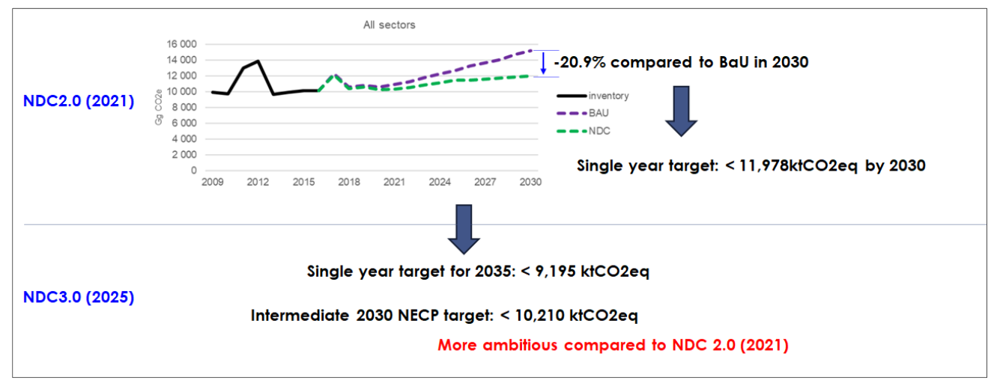
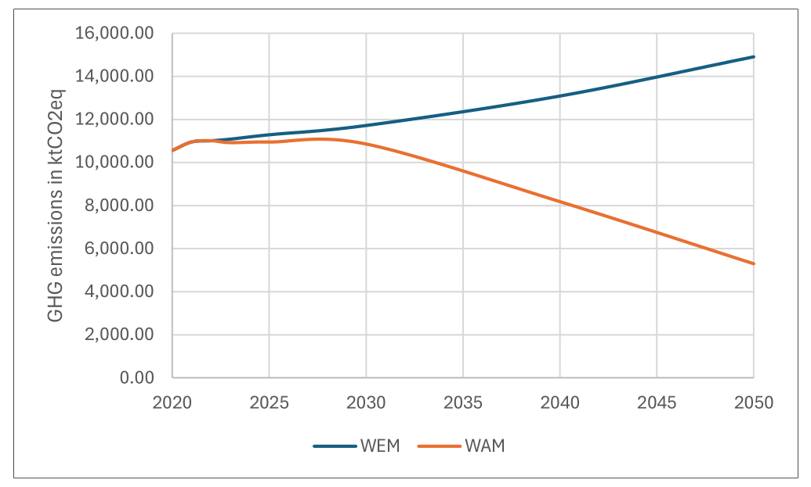
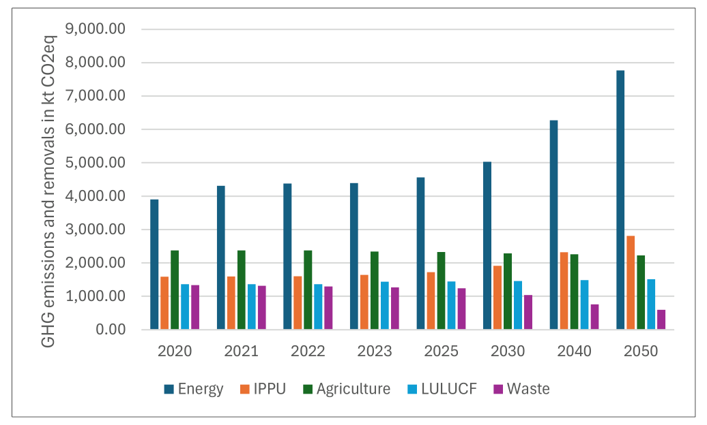
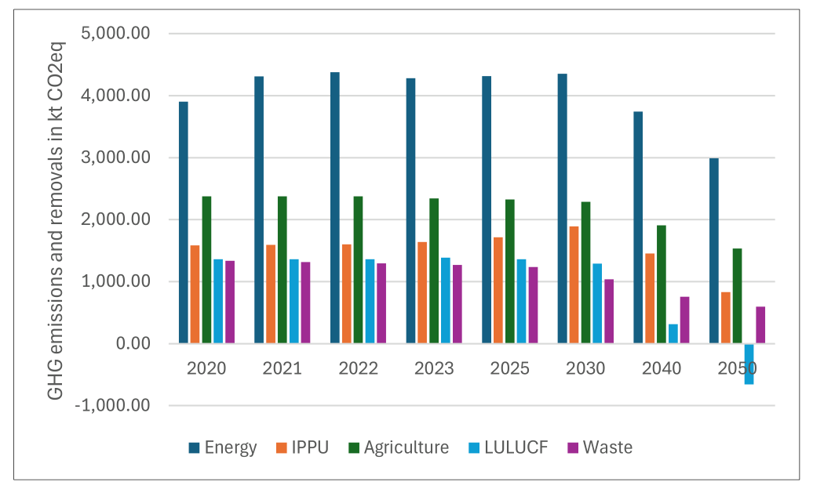
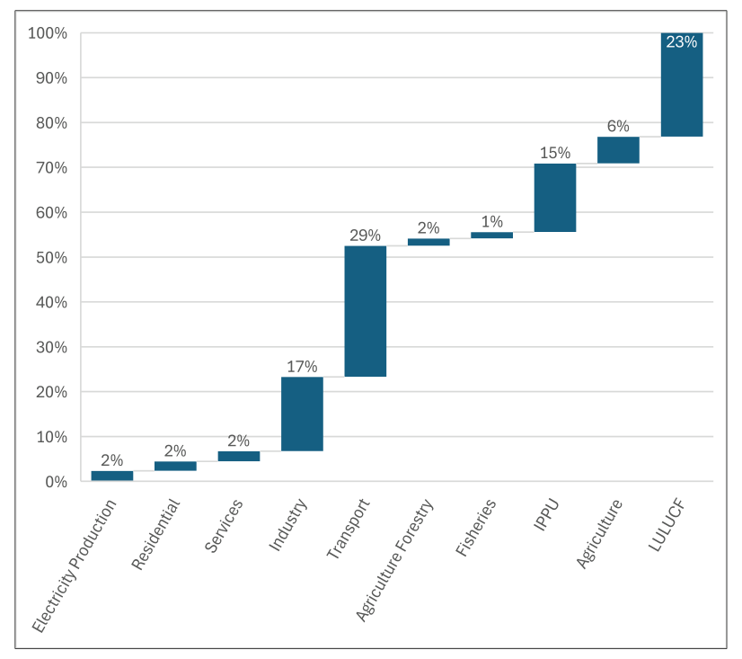
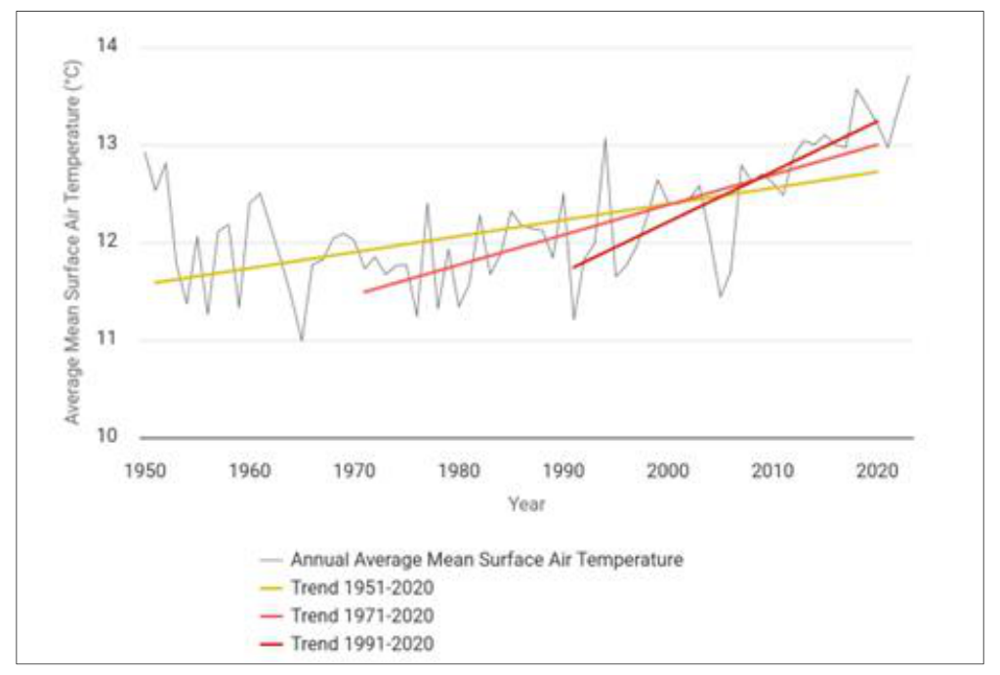
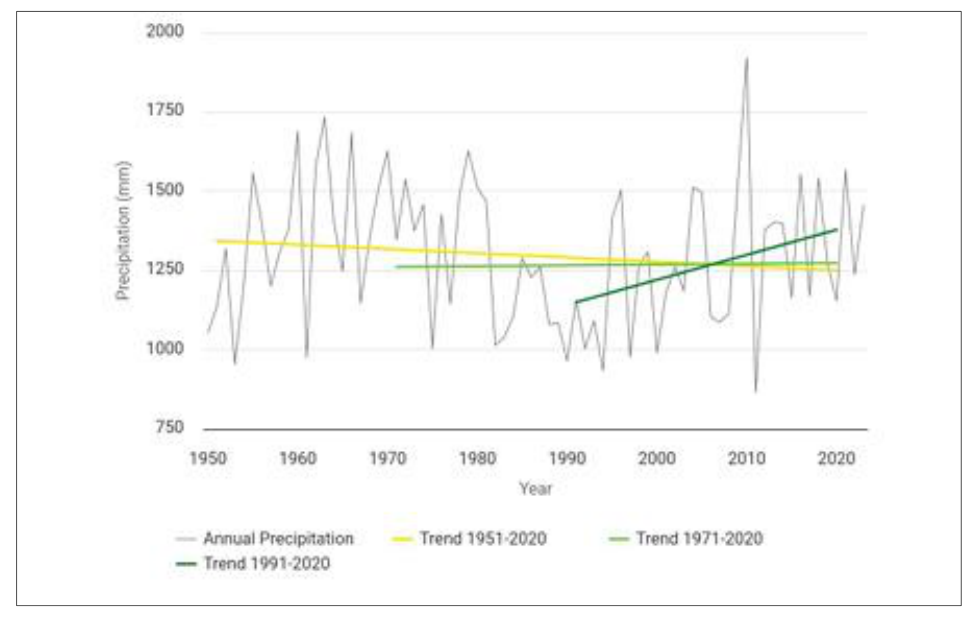
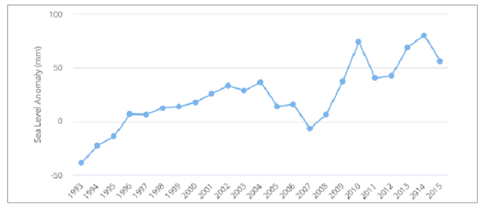

November, 2025
Acronym |
Full Name |
AEZ |
Agro-ecological Zone |
AR6 |
Sixth Assessment Report (of the IPCC, 2022) |
BAU |
Business As Usual (scenario) |
BTR |
Biennial Transparency Report |
CAPEX |
Capital Expenditure (investment cost) |
CCU |
Carbon Capture and Utilization |
CH4 |
Methane (greenhouse gas) |
Conference of the Parties serving as the meeting of the Parties to the Paris Agreement |
|
CMA |
|
(UNFCCC body) |
|
CO2 |
Carbon Dioxide (greenhouse gas) |
CP |
Conference of the Parties (to the UNFCCC) |
DCM |
Decision of the Council of Ministers |
EBA |
Ecosystem-Based Adaptation |
EC |
European Commission |
EE |
Energy Efficiency |
EIA |
Environmental Impact Assessment |
EPBD |
Energy Performance of Buildings Directive (EU Directive 2010/31/EU) |
EPC |
Energy Performance Certificate |
ESCO |
Energy Service Company |
ETS |
Emissions Trading System (EU ETS) |
EU |
European Union |
EU-27 |
European Union (27 Member States) |
EUR |
Euro (European currency) |
F-gases |
Fluorinated Gases (high-GWP industrial gases like HFCs, PFCs, SF₆, NF₃) |
FOLU |
Forestry and Other Land Use (sector) |
GDP |
Gross Domestic Product |
GHG |
Greenhouse Gas |
GIZ |
Deutsche Gesellschaft für Internationale Zusammenarbeit (GIZ) |
GNP |
General National Spatial Plan |
GO |
Guarantee of Origin (renewable energy certificate) |
GWP |
Global Warming Potential |
HFC |
Hydrofluorocarbon |
HWP |
Harvested Wood Products (carbon storage in wood) |
ICTU |
Information to facilitate Clarity, Transparency and Understanding |
IGEO |
Institute of Geosciences (Albania) |
IMWGCC |
Inter-Ministerial Working Group on Climate Change |
IPA |
Instrument for Pre-Accession Assistance (EU funding program) |
IPCC |
Intergovernmental Panel on Climate Change |
IPPU |
Industrial Processes and Product Use |
LULUCF |
Land Use, Land-Use Change and Forestry |
MFZ |
Mediterranean Field Zone |
MHZ |
Mediterranean Hilly Zone |
MMR |
Monitoring Mechanism Regulation |
MMZ |
Mediterranean Mountainous Zone |
MPMZ |
Mediterranean Pre-Mountainous Zone |
N2O |
Nitrous Oxide (greenhouse gas) |
NAP |
National Adaptation Plan |
ND-GAIN |
Notre Dame Global Adaptation Initiative |
NDC |
Nationally Determined Contribution |
NDC3.0 |
Third Nationally Determined Contribution (Albania’s 2025–2035 NDC) |
NECP |
National Energy and Climate Plan |
NF3 |
Nitrogen Trifluoride (greenhouse gas) |
NID |
National Inventory Document |
NIR |
National Inventory Report |
PFC |
Perfluorocarbon |
PV |
Photovoltaic (solar PV technology) |
RE |
Renewable Energy |
RES |
Renewable Energy Sources |
SEA |
Strategic Environmental Assessment |
SF6 |
Sulfur Hexafluoride (greenhouse gas) |
SLR |
Sea Level Rise |
SSP |
Shared Socio-economic Pathway |
SSP1-1.9 |
Shared Socio-economic Pathway 1–1.9 (sustainability/low-emission scenario) |
SSP2-4.5 |
Shared Socio-economic Pathway 2–4.5 (“middle-of-the-road” scenario) |
SSP5-8.5 |
Shared Socio-economic Pathway 5–8.5 (fossil-fueled/high-emission scenario) |
UNFCCC |
United Nations Framework Convention on Climate Change |
USD |
United States Dollar (US$) |
WAM |
With Additional Measures (scenario) |
WEM |
With Existing Measures (scenario) |
The revised NDC of Albania presents an ambition that contributes to achieving the objectives of the UNFCCC and the Paris Agreement, and to achieve regional and national strategies and plans. At the national level, the NDC is aligned with Albania’s long term national and sectoral development strategies, plans and goals. At the regional level, since Albania is in the process of negotiations for being a Member State, the NDC is also aligned with EU’s Green Deal and the target to make the EU's economy climate-neutral by 2050. By fulfilling its NECP and NDC targets, Albania also contributes to the objectives of the EU Green Deal, the Western Balkans Green Agenda and the Sofia Declaration, and to its commitments under the Energy Community.
The NDC was prepared taking into consideration the requirements coming from the UNFCCC, the national legal framework and the active involvement of the central institutions with the Ministry of Environment and Ministry of Infrastructure and Energy being the leading institutions, and also several consultations with different stakeholders from civil society and academia.
The new NDC has been prepared by taking into consideration the Albanian path for the EU Accession and is based on two important documents, the revised National and Energy Climate Plan and the new National Adaptation Strategy. This document also includes the table containing the information to facilitate clarity, transparency and understanding.
Albania's NDC 3.0 sets a target to keep net greenhouse gas (GHG) emissions below 9,195 kilotonnes of CO₂ equivalent (ktCO₂eq) by the year 2035. The goal represents a limitation of emissions growth to 17.4% above 1990 levels, when emissions totaled 7,834.07 ktCO₂eq. Rather than allowing unchecked emissions growth, Albania aims to restrict the increase while pursuing sustainable development and accounts for emissions of carbon dioxide (CO₂), methane (CH₄), nitrous oxide (N₂O), and hydrofluorocarbons (HFCs). Albanian NDC is an economy-wide target, covering all domestic sectors currently reported in the National Inventory Report (NIR). This represents a clear progression from the previous NDC, which set an unconditional target of 20.9% below the business-as-usual (BAU) scenario by 2030 (a cap of approximately 11,978 ktCO₂eq). Under the 1990 base-year formulation adopted here, NDC 3.0 corresponds to 10,210 ktCO₂eq by 2030 (+30.3% above 1990) and 9,195 ktCO₂eq by 2035 (+17.4% above 1990);
The document includes also the adaptation part that is fully aligned with the final draft of Albania’s National Adaptation Plan and focuses on the priority sectors: agriculture and forestry and pastures, tourism, energy, transport, and urban development. These sectors are critical to Albania's economy, supporting livelihoods, infrastructure, and natural resources.
The planning process for Albania’s Nationally Determined Contribution (NDC) is closely integrated with the development of its National Energy and Climate Plan (NECP), ensuring coherence between climate commitments and energy policy. Both processes have benefited from ongoing technical support provided by the Deutsche Gesellschaft für Internationale Zusammenarbeit (GIZ), which has played a key role in facilitating capacity building, data development, and stakeholder coordination.
Albania is member of many of the Multilateral Environmental Agreements including being part of United Nations Framework Convention on Climate Change (UNFCCC) since 1994 and ratifying the Kyoto Protocol and Paris Agreement respectively in 2005 and 2016. Albania has adopted in 2020 a Law on Climate Change (No. 155/2020, date 17.12.2020)1.The law is partially aligned with the UNFCCC requirements and also reflects several requirements coming from the EU Climate Acquis.
Law on Climate Change, according to Article 7:
1. The NDC document determines the national contribution to the reduction of greenhouse gases towards the achievement of the global objective of the United Nations Framework Convention on Climate Change, to keep temperatures at 2°C, while limiting the future risk and costs of adaptation to climate change.
2. The Nationally Determined Contribution is reviewed every 4 years and, if possible, updated with the aim of increasing the greenhouse gas reduction objective to the extent that the country's conditions allow.
3. The Ministry coordinates with the inter-ministerial working group in the field of climate change and, as appropriate, with other stakeholders, the work on the implementation and review of the document provided for in point 1 of this article.
4. The methodology for the drafting and the process of preparing the NDC document is approved by instruction of the Minister, according to the model approved or recommended by the Convention, in accordance with the country's conditions.
5. The document “Determination of National Contribution” is approved by the Council of Ministers upon the proposal of the minister and submitted to the Convention secretariat.”
Albania has prepared the first NDC in 2015 and has approved it with the Decision of Council of Ministers (DCM) No. 762 of 9.9.20152. Based also on the latest developments and requirements in the national and international framework, the NDC was revised and the updated NDC was prepared in 2021, approved with DCM No. 581 of 6.10.20213 and submitted on 12.10.2021. Since it is required by the Albanian law on climate change that NDC should be revised within a four year period , Albania has to adopt the new NDC within 2025. However, due to the length of the approving process, it is expected that the DCM for the approval of the NDC 3.0 will be adopted within 2026.
Albania has prepared the first NECP during the 2020-2021 period and it has been approved with DCM No. 872 of 29.12.20214. Albania initiated a revision of the NECP in 2022 to incorporate updated 2030 energy and climate targets and to respond to recommendations made by the Energy Community Secretariat (EnCS) regarding the quality and completeness of NECP submissions. This revision process extended through 2024 and 2025 and was supported by technical assistance from GIZ. As such a draft was prepared and the consultation process has been finalized. The NECP is in the final stage of approval, has completed also the Strategic Environmental Assessment process and within September 2026 is expected to be approved Albania’s National Strategy for Development and European Integration (NSDEI III) covers the period 2022–2030 and was formally approved by the Council of Ministers with Decision No. 88 dated 22.02.2023, setting the overarching framework for reforms aligned with EU accession and sustainable development. The implementation is subsequently operationalized through rolling instruments such as the National Plan for European Integration 2024–2026 and other cross- sector strategies that derive from and are coordinated under the NSDEI III5.
The adaptation priorities and measures presented in this NDC are drawn from and aligned with the Albania's National Adaptation Plan (NAP) 2026 – 2026 approved in June 2026 which provides the strategic framework for climate change adaptation and forms the basis for the adaptation component of this NDC.
Although both the first NECP and the second (updated) NDC were approved in 2021, the documents were not fully compliant. The NECP followed the approach required by the Energy Governance Regulation, including the development of Policies and Measures as well as the WEM (With Existing Measures) and WAM (With Additional Measures) scenarios. In contrast, the NDC adopted a different framework based on the BAU (Business as Usual) and NDC target (Nationally Determined Contribution) scenarios. Moreover, the modelling of total emissions was not consistent between the two documents.
It is considered for this revision of the NDC that it should follow the outcomes and modelling of the revised NECP for the following reasons:
- The scenarios and the path toward carbon neutrality should be clear and follow one agreed path (since both NECP and NDC are approved by the Council of Ministers) - The NDC, in turn, will gain increasing importance for reporting to the UNFCCC, notably through the Biennial Transparency Report (BTR), while the NECP remains the primary instrument for reporting to the Energy Community. NECP has been revised taking into consideration the latest data available and the main planning documents (strategies and action plans) in force. - NECP also takes into consideration the requirements and results expected by the NDC - There are several strategic documents that are basis for both NECP and the NDC, like the: - National Strategy for Development and European Integration (2022-2030) - National Energy Strategy (2018–2030) - On the Approval of the Strategic Document and National Plans for Greenhouse Gas Mitigation and Climate Change Adaptation (2019) - Albanian National Adaptation Plan (NAP) 2026-20366 - - Forest Policy Document (2019-2030) - National Strategy for Agriculture, Rural Development and Fisheries (2021-2027) - Other sectorial strategies.
In relation to the costing, there is not a specific calculation of costs prepared only for the NDC. Due to the fact that both mitigation and adaptation part of the NDC were aligned with already existing documents that have carried out their own costing, in this document only a reference to the costs of the measures is mentioned and not as a cost related specifically to the NDC.
Albania is located in the southwestern corner of the Balkan Peninsula, occupying 28,748 square kilometers with a maximum length of about 340-km and a maximum width of about 150-km. Much of the country is rugged and mountainous. The highest peak is Korabi in the northeast at 2752m. Albania has 1,094 km of borders, 30% of which is the shore of the Adriatic and Ionian Seas and several transboundary lakes, where Lake Shkodra is the largest in the Balkans and the Lake of Ohrid is the deepest. The resident population in the Republic of Albania according to the Census of 2023 was 2,402,113, a decrease of 420,000 people, compared to the 2011 Census. The population density of Albania is 83.6 inhabitants per square km and the population decline follows the trend observed since 1990, which comes as a phenomenon of emigration.
Albania applied for European Union (EU) membership in April 2009 and has been an official candidate country since June 2014. EU membership is a core political and strategic objective, shaping Albania’s legal, economic, and institutional development. On 25 March 2022, the Council of the EU decided to open accession negotiations, a decision endorsed by the European Council the next day (26 March 2022). Albania has been making steady progress in its EU accession path. EU integration remains a top priority for the Albanian Government, and the negotiation process is seen as a critical driver for advancing EU-related reforms under the revised methodology. Albania approved the Negotiating Position for Cluster 4 EU acquis: “Green agenda and sustainable connectivity” and officially submitted it to the EC in June 2025. Negotiations for Cluster 4 which combines four chapters related to transport (Chapter 14), energy (Chapter 15), trans-European networks (Chapter 21), environmental and climate change (Chapter 27), were officially opened on 16 September 2025, after the 6th Intergovernmental Conference with Albania.
Environment and Climate Change is also the focus of the new Government coming from the general election of 2025. In the Governmental program one of the commitments for the sector is: “to harmonize climate policies across all sectors to reduce emissions and adapt to climate change.” Such alignment is partially fostered through the NSDEI III, in which the vision describes a strong and stable economy for Albanian, through a zero-emissions pathway and green economic growth.
Regional cooperation under the Berlin Process and Albania’s endorsement of the Sofia Declaration on the Green Agenda for the Western Balkans have further solidified its commitment to a carbon-neutral future by 2050. Albania is committed to implement the Green Agenda Action Plan and is actively involved in the recent update of the Plan. Albania as is also member of many of the Multilateral Environmental Agreements has been an active member in the Conference of Parties and works toward respecting the commitments.
Albania’s economy has been growing steadily. In 2024 growth was about approximately 4% and projections for the next few years are somewhat lower but still positive (approx. 3–3.5%). The economy is dominated by service sector and key sectors are tourism, trade, transport and real estate. It should be noted that agriculture remains significant particularly for employment, but its relative contribution is declining. The deficit has fluctuated; public debt is moderate, approx. 55‑60% of GDP in recent years (INSTAT, 2025).
Implementation of Albania’s mitigation policies under the NECP and NDC 3.0 is expected to generate significant macroeconomic and social co-benefits. Investments in energy efficiency (EE) and renewable energy (RE) not only contribute to greenhouse gas emission reductions but also yield positive effects on household income, employment, and public finances. Energy efficiency measures in buildings and appliances can reduce energy costs, thereby increasing disposable household incomes and alleviating energy poverty, particularly for low-income groups. These improvements enhance living standards and stimulate local economic activity through higher consumer spending. In terms of public budgets, EE and RE measures can initially require subsidies or tax incentives but ultimately improve fiscal balances through increased income tax revenues from newly created jobs and reduced public energy expenditures. The employment effects are especially positive: building renovation programs and renewable energy deployment are projected to generate thousands of green jobs in construction, manufacturing, and maintenance, offsetting minor job losses in fossil energy-related sectors. For example, under the NECP’s scenarios, RE and EE investments could create up to 12,000 full-time equivalents jobs by 2030. Moreover, the expansion of solar Photovoltaic (PV) and wind capacity is expected to add over 3,000 new jobs across installation and operation phases. These measures collectively support GDP growth, stimulate innovation, and strengthen Albania’s transition toward a low-emission, resilient, and inclusive economy, while aligning with EU climate and energy objectives.
The Albanian Constitution considers the sustainable development of tourism and environment protection as one of the country’s main objectives. Environmental protection and nature conservation are recognized as fundamental constitutional values, which everyone has the responsibility to protect and improve.
Since 2002, the country has started the process of harmonization of the environmental legislation with the EU acquis, and new laws on Environment, Nature protection, Water, Air Quality and Waste Management have been adopted. There are specific laws to regulate the process of Environmental Impact Assessment (EIA) and Strategic Environment Assessment (SEA), as well as for Integrating Polluting Control (IPC), risk management and chemicals.
Although Albania may be considered a country that has laid the foundations for environmental progress and environmental protection, the biggest challenge is the implementation of legislation in particular that related to water and waste management, nature protection, energy, industrial pollution, risk management, and mitigation of and adaptation to climate change. Furthermore, administrative capacities, both at central and at local level, are insufficient, particularly in terms of qualifications and human resources available to implement and enforce EU legislation on the environment, energy and climate change.
National climate and energy policies are central to addressing environmental challenges, focusing on GHG reduction, renewable energy expansion, and energy efficiency. These measures are complemented by efforts in agriculture, transport, and biodiversity preservation. Albania aims to balance energy development with ecosystem protection by integrating environmental impact considerations into infrastructure planning. Climate mitigation and adaptation actions support soil health, sustainable farming, biodiversity, and natural habitat restoration.
With the signing of the Paris Agreement by the Government (New York, April 22, 2016), Albania has entered a new era of the international climate policy process, where all parties collectively aim to keep the increase in global temperature to 2°C above pre-industrial levels.
The National Strategy of Energy 2018 - 2030, National Energy and Climate Plans (NECP), National Climate Change Strategic Document that includes the Mitigation Action Plan, and the National Strategy of Transport have defined objectives and targets on increasing the security of supply by investments in the power sector, gas penetration in the Albanian market, increasing the share of RES and Energy efficiency followed by a reduction of GHG emissions.
On the adaptation side, Albania's National Adaptation Plan (NAP) 2026-2036 (June 2026) sets the strategic framework for climate change adaptation across the priority sectors, complementing these energy and mitigation strategies, and is further supported by biodiversity and ecosystem- protection planning such as the National Biodiversity Strategy and Action Plan (NBSAP).
Climate and energy policies are designed to be socially inclusive, targeting improved well-being, equity, and energy access—particularly for vulnerable and marginalized populations, including women, youth, and rural communities. Green investments in construction, renewable energy, and energy efficiency are not only reducing emissions but also creating decent jobs and livelihood opportunities, with increasing participation of women and young professionals in emerging green sectors. This contributes to poverty reduction, social mobility, and gender-responsive development.
Public participation and stakeholder engagement are emphasized to ensure that transitions are transparent, equitable, and socially accepted, giving voice to civil society, local communities, and underrepresented groups. Education, training, and awareness programs further promote environmental stewardship, youth engagement, and capacity-building for inclusive climate action.
Specifically, national energy efficiency policies aim to improve the efficient use of energy and reduce final energy consumption in line with the targets set in the NECP. These measures are expected to contribute to more affordable energy services and improve household resilience, particularly for vulnerable and low-income groups. While energy efficiency objectives are guided by the targets set out in Albania's 2025 National Energy and Climate Plan (NECP), no dedicated quantitative target on energy poverty has been established for 2035. Instead, reducing energy poverty for low-income households is pursued through the implementation of energy-efficiency measures. Through these measures, Albania's climate and energy transition seeks to balance environmental objectives with social well-being, enhancing the quality of life and resilience of all citizens while ensuring that no one is left behind.
The dataset summarizes Albania’s greenhouse gas (GHG) emissions expressed in kilotonnes of CO₂ equivalent (kt CO₂-eq) for the period from 1990 to 2022. The gases covered are carbon dioxide (CO₂), methane (CH₄), nitrous oxide (N₂O), and hydrofluorocarbons (HFCs), presented both with and without LULUCF adjustments. Each gas exhibits distinct behavior reflecting the structure of Albania’s economy, its energy transition, agricultural intensity, and waste management systems. These figures are drawn from Albania's latest National Inventory Report (NIR) for the period 1990–2022, to which readers are referred for the complete time series, sectoral breakdowns and underlying tables.
In 1990, Albania’s CO₂ emissions (excluding LULUCF) were around 9,622 kt, while including LULUCF they were slightly lower at 8,990 kt, indicating that the land-use sector acted as a modest carbon sink. Over the following decades, emissions exhibited a fluctuating downward trend, largely due to structural changes in the energy system, the decline of heavy industry, and shifts in land management. By 2022, total CO₂ emissions excluding LULUCF had declined to 7,006 kt, whereas including LULUCF they stood at 7,200 kt. This represents an overall decline of approximately 27% from 1990 levels, despite moderate year-to-year variations.
During the early 1990s, CO₂ emissions were relatively high, primarily due to fossil fuel combustion in the industrial and energy sectors during the transition period following the collapse of state industries. The period 1990–1995 marks a steep decline in CO₂ levels, coinciding with economic restructuring, the shutdown of heavy industry, and reduced energy demand. In subsequent years, a gradual recovery occurs as the economy stabilizes and energy consumption increases, though the carbon intensity remains lower than the pre-1990 levels. CO₂ remains the dominant contributor throughout the series, accounting for roughly 65–75 % of total GHG emissions.
Methane emissions followed a different trajectory. Excluding LULUCF, CH₄ emissions started at 1,856 kt CO₂-eq in 1990 and fell to 1,198 kt by 2022, a reduction of about 35%. The inclusion of LULUCF effects slightly altered these totals, reflecting limited interaction between methane and land-use dynamics. The primary sources of CH₄ emissions remain the agricultural and waste sectors—especially livestock enteric fermentation and landfill gas—both of which have shown gradual mitigation since the early 2000s. Methane (CH₄) emissions display a flatter but fluctuating trend, largely tied to agriculture (especially livestock and manure management) and solid waste disposal. CH₄ levels remain fairly stable through the 1990s, with minor reductions following improvements in waste handling practices. However, from the mid-2000s onward, there are slight increases attributable to growing livestock populations and urban expansion, which increase the volume of organic waste. Methane’s contribution to total GHG emissions averages between 20–25 percent, highlighting its sustained importance in the national inventory.
Nitrous oxide (N₂O) emissions have fluctuated more irregularly. In 1990, emissions excluding LULUCF were 685 kt, falling to 283 kt by 2022, marking a 59% reduction. When including LULUCF, N₂O emissions were 640 kt in 1990 and 364 kt in 2022. These values suggest improvements in fertilizer management and declining agricultural intensity, but also a potential offset from soil and forest-related emissions. Nitrous oxide (N₂O) emissions remain the smallest share, typically around 5–10 percent of total GHGs. The trend line for N₂O is relatively stable, with small variations reflecting agricultural fertilizer use and changes in land-use intensity. Slight increases in N₂O in the late 2000s and early 2010s coincide with agricultural recovery and intensified crop cultivation, while more recent years suggest stabilization due to better fertilizer management and shifts toward less emission-intensive practices.
Albania's Nationally Determined Contribution (NDC) sets a target to keep net greenhouse gas (GHG) emissions below 9,195 kilotonnes of CO₂ equivalent (ktCO₂eq) by the year 2035 (Table 1). This target is based on the "With Additional Measures" (WAM) scenario outlined in Albania’s 2025 National Energy and Climate Plan (NECP), reflecting enhanced policy action to reduce emissions across multiple sectors. The goal represents a limitation of emissions growth to 17.4% above 1990 levels, when emissions totaled 7,834.07 ktCO₂eq. Rather than allowing unchecked emissions growth, Albania aims to restrict the increase while pursuing sustainable development. This base-year formulation marks a methodological improvement over the previous NDC, which expressed its target as a percentage reduction against a business-as-usual (BAU) scenario; Section 4.2 sets out the comparison between the two targets.
The target is economy-wide, covering all domestic GHG emissions from key sectors including energy (excluding international transport), industrial processes and product use (IPPU), agriculture, waste, and land use, land use change, and forestry (LULUCF). It is a single-year target for 2035, covering the period from January 1, 2025, to December 31, 2035. Importantly, the commitment is to be achieved without reliance on international carbon credits, highlighting Albania’s dedication to domestic climate action.
The NDC accounts for emissions of carbon dioxide (CO₂), methane (CH₄), nitrous oxide (N₂O), and hydrofluorocarbons (HFCs). Other gases such as perfluorocarbons (PFCs), sulfur hexafluoride (SF₆), and nitrogen trifluoride (NF₃) are not included due to their negligible presence in the national inventory. Methodologically, Albania follows the 2006 Intergovernmental Panel on Climate Change (IPCC) Guidelines and uses the Global Warming Potential (GWP) values over a 100-year time horizon from the IPCC’s Fifth Assessment Report. In addition to the 2035 target, Albania is also working toward achieving climate neutrality by 2050, a long-term objective also articulated in its NECP.
Achieving the 2035 mitigation target, together with the updated intermediate target for 2030 defined in the 2025 NECP (see Section 4.2), will require the full implementation and adequate financing of all mitigation measures that are included in the 2025 NECP. This will ensure that policy commitments are translated into concrete actions, enabling Albania to remain on track toward its long-term decarbonization objectives.
Information |
Description |
||||
Target and description |
Keep net greenhouse gas (GHG) emissions below 9,195kilotonnes of CO₂ equivalent (ktCO₂eq) by the year 2035 equivalent to limit the increase of emissions by 17.4% compared to base year (1990) |
||||
Target type |
Single year target compared to a base year |
||||
Target year |
2035 (single-year target) |
||||
Base year |
1990 |
||||
GHG emissions in base year |
7,834.07 ktCO₂eq |
||||
Implementation period |
2025-2035 |
||||
Sectors |
Albanian NDC covers all domestic sectors currently reported in the NIR (National Inventory Report) |
||||
Gases |
Carbon dioxide (CO2), methane (CH4), nitrous oxide (N2O), and HFCs PFCs, SF6 and NF3 are not covered as they are considered negligible. |
||||
LULUCF categories and pools |
The included LULUCF categories and pools as reported in the NIR |
||||
Intention to use cooperative approaches |
Albania’s NDC target will be met solely through domestic measures, without using international credits. However, Albania plans to engage in voluntary cooperation under Article 6 of the Paris Agreement by selling carbon credits through 2035 to support cost- effective, low-emission development. A future Emissions Trading System (ETS), aligned with EU standards and potentially linkable to the EU ETS, is currently being planned, too. |
||||
Any updates or clarifications of previously reported information, as applicable |
The reference indicator to track the progress of NDC implementation will be quantified using national totals reported in the Albania’s National Inventory Report. These values may be updated to reflect methodological improvements in the greenhouse gas (GHG) inventory. Achieving the 2035 mitigation target, together with the updated intermediate target for 2030 defined in the 2025 NECP, will require the full implementation and adequate financing of all mitigation measures that are included in the 2025 NECP. |
Albania has revised the structure and methodology of its Nationally Determined Contribution (NDC) target to enhance clarity and alignment with international standards. The updated approach transitions from a single-year target based on a Business-as-Usual (BAU) scenario to one anchored in a historical base year, which is the base year of the Convention, 1990. This shift reflects a significant methodological improvement. Rather than referencing a hypothetical future emissions pathway, the target is now grounded in a verified historical benchmark. This enhances the transparency and comparability of Albania’s commitments, as well as their methodological robustness, by allowing for clearer measurement of progress against a known quantity.
The updated NDC also represents a more ambitious commitment (Figure 1) than the one outlined in Albania’s previous NDC submission (October 2021). Previously, the country pledged to reduce GHG emissions by 20.9% below the BAU scenario by 2030, which would have capped emissions at approximately 11,978 ktCO₂eq. In contrast, the new target sets a firmer intermediate ceiling for 2030 emissions based on 2025 NECP, limiting them to below 10,210 ktCO₂eq. This corresponds to restricting the increase in emissions to no more than 30.3% above 1990 levels, rather than relying on projections of what emissions would have been in the absence of climate action. The new framing not only aligns more closely with best practices under the Paris Agreement but also reflects Albania's strengthened commitment to climate mitigation.
To ensure accurate tracking and reporting, the reference indicator for the NDC, net GHG emissions, will be quantified using data submitted through Albania’s National Inventory Report (NIR), which accompanies its Biennial Transparency Report (BTR). This ensures consistency with international reporting requirements and enhances accountability. The changes made in Albania's NDC signal a commitment to more rigorous climate governance and a readiness to align with evolving international expectations for transparency and ambition.

For the development of NDC 3.0, Albania considered the two projection scenarios (Figure 2) outlined in its 2025 National Energy and Climate Plan (NECP):
The targets set in both the NECP and NDC 3.0 are based on the WAM scenario, which has been selected as the reference scenario for the NDC due to its more ambitious mitigation potential.
Albania is committed to achieving climate neutrality by 2050, as outlined in the NECP. Accordingly, future updates to the 2050 outlook will reflect this long-term objective.

In the WEM scenario (Figure 3), overall GHG emissions show an upward trend, with limited contributions from the transformation sector. Emissions increase significantly during dry years (every five years after 2022).
The transport sector remains the largest source of emissions, with levels projected to rise by 36% by 2035 compared to 2020, as growing mobility demand continues to outpace electrification efforts. The industrial sector follows, with emissions projected to rise by 73%, driven largely by energy-related activities and GDP growth. The minerals sector—particularly cement production—remains the largest and most difficult to decarbonize source, as it sees minimal electrification compared to ferro-alloy production, which already relies on electric arc furnaces.
In contrast, the residential sector achieves modest reductions, around 16% by 2035, mainly due to improved building structures and a shift toward cleaner heating and hot water technologies. Meanwhile, emissions from the services sector are expected to grow significantly, increasing by 68% over the same period, primarily because of continued economic expansion.
Emissions from electricity production remain low due to limited use of the Vlora thermal power plant, repowered with natural gas. This plant operates mainly during dry years, and from 2032 onward, demand will justify annual operation.
Agricultural emissions remain largely stable, declining by only 4% by 2035 compared to 2020. Emissions continue to be dominated by enteric fermentation, as livestock numbers show little change. A modest reduction is attributed to lower urea use. The LULUCF sector (Land use, land- use change, and forestry) remains a net source of emissions, with an 8% increase projected by 2035 relative to year 2020 according to the WEM scenario of NECP, as carbon sequestration from forests is insufficient to offset emissions from forest management. Although large forest fires are not directly represented in the projection model, the area affected by fires is expected to increase over time.
Emissions from the waste sector are projected to decline after 2025, driven by improvements in solid waste and wastewater management, resulting in an overall 33% reduction by 2035 compared to 2020. However, legacy emissions from existing landfills persist. Transitioning from direct river discharge to managed wastewater systems also reduces methane emissions.
Industrial Processes and Product Use (IPPU) emissions rise steadily beyond 2030, driven mainly by cement production and the use of refrigerants replacing ozone-depleting substances, currently the second-largest source of IPPU emissions (+34% in 2035 compared to 2020). Other industrial subsectors contribute only marginally.

In the WAM scenario (Figure 4), renewable energy plants are assumed to operate at full capacity regardless of domestic electricity demand, enabled by a liquid energy market and strong interconnections. Since renewable electricity has minimal operating costs, surplus energy is exported, typically without affecting the overall results.
In the residential sector, emissions are projected to decline primarily due to the wider adoption of heat pumps, the electrification of cooking systems, and lower energy demand resulting from building renovations, representing a 33% reduction by 2035 compared to 2020. While emissions in the services sector increase in response to higher economic activity, industry emissions are notably lower than in the WEM scenario, reflecting greater electrification, fuel switching, and enhanced energy efficiency. Overall, industry emissions are projected to rise by 34% in 2035 relative to 2020. In transport, emissions remain stable until 2030, after which they decline gradually due to rising electrification, the introduction of hydrogen, and expanded public transport options for both passengers and freight, resulting in a 7% reduction by 2035 compared to 2020.
The WEM and WAM scenarios differ markedly in the LULUCF sector. While the overall sink capacity remains stable and comparable between the two scenarios, emissions from forest management decline significantly under WAM due to enhanced sustainable practices and increased carbon sequestration. As a result, emissions are projected to fall by 41% in 2035 compared to 2020.
Another major shift comes from the cement industry, where the adoption of carbon capture and utilization (CCU) technologies is assumed. By 2050, these measures are projected to cut cement- related emissions by 80% (including both process and combustion emissions).
Other sectors show moderate reductions relative to the WEM scenario, particularly agriculture, where emissions decline by 12% in 2035 compared to 2020 due to targeted measures to reduce methane from enteric fermentation. An ambitious waste management strategy, already factored into the WEM scenario, continues to support emissions reductions in the WAM outlook.

Mitigation efforts in Albania are primarily driven by the operational characteristics of renewable energy plants, the reduction of fossil fuel use in the transport and industrial sectors through fuel switching, and the implementation of energy efficiency measures targeting both public and private buildings. In addition, sustainable forest management plays a significant role in emissions reduction.
Strategic policies under the decarbonization dimension focus on achieving updated national targets aimed at reducing greenhouse gas (GHG) emissions and increasing the share of renewable energy in gross final energy consumption. Albania is prioritizing an expansion of its renewable energy portfolio. Building on a strong foundation in hydroelectric power, the country is actively working to diversify its energy mix by developing wind, solar, and biomass energy projects.
NSDEI III also addresses climate change mitigation and the transition to a low-carbon economy. As noted, the strategy acknowledges Albania’s low contribution to global GHG emissions but commits to further limiting emissions in line with global effort. It references Albania’s revised NDC, given the chronological difference between this NDC and the initial deployment of the NSDEI in 2023. However, the strategy reflects the country’s international commitment under the Paris Agreement. The document underscores that meeting these targets will require full-scale integration of mitigation actions across sectors. In the climate change section of the NSDEI III, explicitly listing as a policy goal the “undertaking of a series of measures at the national level to reduce emissions by 20.9% (based on the revised NDC) by 2030”. The strategy then outlines priority mitigation measures such as the integration of GHG mitigation measures into public budgets and into all national and local strategic documents (by 2025 and 2030, respectively). Another priority is to ensure full adoption of primary and secondary legislation in the climate field (aligning with EU climate acquis) and to mainstream climate issues into all sectors affected by climate change by 2027.
The mitigation actions presented in this section are those set out in Albania's 2025 NECP. The NDC adopts the NECP policies and measures under both the With Existing Measures (WEM) and With Additional Measures (WAM) scenarios as its implementation backbone; accordingly, the measures identified in the NECP — and, where relevant, in the NSDEI III — are the measures Albania is committed to implementing under this NDC by 2035. The detailed implementation timelines, quantified sub-targets and monitoring indicators for each measure reside in the NECP and its annexes and are not reproduced in full here.
In terms of renewable energy, the targets for 2030 are presented in Table 2 (source: NECP 2025). Projections for 2035 are based on the “With Additional Measures” (WAM) scenario outlined in the 2025 NECP, which has been selected as the basis for the current Nationally Determined Contribution (NDC).
RES share in %7 |
Year, 2030 |
Year, 2035 |
RES transport |
34.8 |
68.28 |
RES electricity |
145.8 |
147.3 |
RES heating and cooling |
22.6 |
28.6 |
RES in final consumption |
59.4 |
66.7 |
The implementation of energy efficiency measures across various sectors, including industry, residential buildings, and transportation, is essential to reducing overall energy consumption and greenhouse gas (GHG) emissions.
To this end, the Order of the Minister of Infrastructure and Energy No. 203, dated 18.10.2022, approved the format for action plans and annual progress reports for large energy consumers9. In alignment with the principles of conducting energy audits for large consumers, particularly in industrial activities, and promoting energy management systems for Small and Medium Enterprises (SMEs), this regulation aims to ensure energy savings of at least 4% of total equivalent energy consumption for this consumer category. These action plans are developed based on audit reports completed by licensed energy auditors. Large energy consumers that have employed certified energy managers are required to report their energy savings to the Agency for Energy Efficiency.
Additionally, the Order of the Minister of Infrastructure and Energy No. 206, dated 25.10.2022, introduced the approved format for local action plans on energy efficiency10 and associated progress reports, while the Decision of the Council of Ministers No. 189, dated 5.04.2023, established a monitoring and verification platform11. These instruments are intended to track energy efficiency activities at the municipal level and will serve as a framework for evaluating progress toward national energy efficiency targets.
In the building sector, a well-balanced package of policy measures is currently being implemented to support the energy renovation of the building stock and to achieve the targeted renovation rate. A Long-Term Renovation Plan for both public and private buildings is under development and will define the necessary policy, financial, fiscal, and regulatory measures
Moreover, the Guideline of the Minister of Infrastructure and Energy No. 23, dated 17.10.2022, introduced a standard contract model for energy performance contracting, in accordance with the principle of promoting Energy Service Company (ESCO) models to scale up energy efficiency investments.
In the area of energy efficiency, a target has been set to reduce final energy consumption by 2030 (Table 3; source: NECP 2025). Projections for 2035 are based on the “With Additional Measures” (WAM) scenario outlined in the 2025 NECP, which serves as the basis for the current Nationally Determined Contribution (NDC).
Year, 2030 |
Year, 2035 |
|
Final energy consumption (Mtoe) |
2.25 |
2.37 |
The Inter-sectoral Strategy for Agriculture, Rural Development, and Fisheries (2021–2027)12, approved in 2022, outlines a comprehensive approach that integrates climate mitigation objectives into sectoral planning. Key mitigation-related components of the strategy include:
1. Promotion of sustainable agricultural practices – Encouraging efficient resource use and the adoption of green technologies to reduce GHG emissions from farming activities.
2. Land use improvements and ecosystem restoration – Supporting reforestation, soil conservation, and improved land management to enhance carbon sequestration and reduce land degradation.
3. Sustainable fisheries management – Implementing practices that prevent overfishing and protect marine ecosystems, thereby supporting biodiversity and contributing to emissions reduction in the fisheries sector.
In the Forestry and Land Use sector, Albania is investing in reforestation and afforestation projects as part of its efforts to offset greenhouse gas emissions. These initiatives not only contribute to carbon dioxide absorption but also enhance biodiversity and ecosystem health. The country is also adopting sustainable land use practices and implementing measures to prevent deforestation, both of which are critical for maintaining carbon sinks and improving environmental resilience. Albania has approved in 2018 with the DCM No. 814 of 31.12.2018 the policy document for forest 2019 – 203013.
Fostering such actions, the NSDEI III recognizes the role of ecosystems in climate mitigation and adaptation. It discusses the importance of wetland habitats considering them as vital for Albania’s biodiversity, hosting about 70% of the country’s bird, reptile, and mammal species, while providing services like flood mitigation, carbon sequestration, and balancing climate indices. Likewise, sustainable water resource management is framed with ecological considerations, hence the vision for the water sector by 2030 includes efficient use and integrated management that ensures the protection of natural environment and biodiversity, and improvement of water body status, by controlling pollution and reducing volatility.
In the waste sector, several mitigation measures have been adopted and implemented to reduce methane (CH₄) emissions from biodegradable waste. These include the integration of waste incineration plants into Albania’s overall waste management system, the expansion of aerobic wastewater treatment plants and their coverage, as well as capacity building and institutional development related to waste and wastewater management at the municipal level.
As a candidate country for EU membership, Albania is aligning its climate policies with EU regulations and standards to support its green transition. The country aims to actively participate in EU-funded initiatives that promote sustainable development and climate neutrality. By leveraging EU financial support and technical assistance, Albania seeks to strengthen its capacity to implement climate action projects and advance the adoption of climate-neutral policies.
Table 4 (below), provides an overview of key Policies and Measures (PaMs) influencing national climate mitigation targets.
Definitions:
PaMs are categorized under two scenarios:
The impact of the planned measures, i.e. additional actions proposed beyond those already implemented and adopted, is estimated to result in a total reduction of 3.2 MtCO₂eq in greenhouse gas emissions. The sectoral distribution of this mitigation effect is shown in Figure 5. Approximately 29% of the total reduction between the two scenarios originates from the transport sector, 23% from LULUCF, 17% from industry, and 15% from IPPU. The contribution from other sectors is smaller, ranging between 2% and 6%. The waste sector is not included in this allocation, as the impact of waste-related measures is already reflected in the WEM scenario.
It is important to note that the mitigation effect attributed to the LULUCF sector in the WAM scenario does not result from increased carbon removals by forests. Rather, it reflects reduced carbon losses achieved through improved forest management, the promotion of sustainable land use practices, and the prevention of deforestation.

Nr. |
Code of PaM |
PaM name |
Type of PaM |
Financial - investments |
Allocated to Scenario |
1 |
G-T1 |
Improvement of intra- urban/intercity bus network lines |
Regulatory |
Specific budget not available but the total budget foreseen for investments in the transport sector for a period of 20 years (2019- 2038) is 4,888.03 MEUR of these 4,458.53 MEUR are for projects developed by the public sector while, 429.5 MEUR are private investments. Estimate: 20,000 EUR per feasibility study |
WAM |
2 |
G-T2 |
Integrated freight management |
Regulatory |
WAM |
|
3 |
G-T3 |
Efficiency-based car fees and incentives for fleet renewal |
Regulatory; Fiscal |
WEM |
|
4 |
G-T4 |
Clean vehicles in public procurement |
Regulatory |
WAM |
|
5 |
G-T5 |
Green hydrogen in heavy- duty transport |
Technical; Financial |
WAM |
|
6 |
G-B1 |
Policies to support RES in Heating and Cooling Sector |
Regulatory. Financial. Educational |
Estimated at 1.6 MEUR for solar thermal, and 50 kEUR for technical assistance for the preparation and implementation of the legal framework |
WEM |
7 |
G-I1 |
Implementation of the ETS in Albania |
Regulatory; Educational |
2 M EUR (as an indicative figure based on benchmarking) |
WAM |
8 |
G-I2 |
Establishment of a mechanism for implementation of Monitoring Mechanism Regulation (MMR) |
Regulatory |
1 MEUR |
WEM |
9 |
G-I3 |
Reduction of GHG emissions from cement production |
Technical |
Approx. 0.3 MEUR for feasibility study |
WAM |
10 |
G-I4 |
Reduction of Fluorinated Gases (F-Gases) Emissions |
Regulatory; Financial |
Approx. 0.5 MEUR |
WAM |
11 |
G-I5 |
Green hydrogen for the ferrochrome and steel producing industry |
Technical; Financial |
Estimate: 0.5 MEUR for studies at strategic and feasibility level |
WAM |
12 |
G-I6 |
Green hydrogen strategy |
Promotional; Regulatory |
Approx. 0.3 MEUR for strategy development |
WAM |
13 |
G-A1 |
Promotion of organic agriculture |
Regulatory; Financial; Educational |
The budget for Agri-environmental, climatic and organic farming measures is 2.5 MEUR after 2020. Estimated 150 kEUR for training and awareness creation. |
WEM |
14 |
G-A2 |
Improve the Agricultural Monitoring in Albania |
Regulatory |
No budget identified specifically |
WEM |
15 |
G-A3 |
Regulating the Agricultural burning practices |
Regulatory; Educational |
No budget identified specifically |
WEM |
16 |
G-W1 |
Emission reduction from waste |
Regulatory; Financial |
The estimated value for landfill rehabilitation is approx. 76 MEUR; Collection of dry recyclables approx. 18.5 MEUR and collection of organic waste and composting approx. 13 MEUR. (All values have been calculated until for the period 2018- 2032.) |
WEM |
17 |
G-W2 |
Use of Waste Incineration Plants for the waste integrated management process in Albania |
Regulatory; Financial |
Awareness creation and training approx. 100 kEUR |
WEM |
18 |
G-W3 |
Increase of Wastewater Treatment Plants and their related coverage |
Regulatory; Financial |
The (draft) Water Supply and Sewerage National Strategy 2019- 2030 costs approximately 1,500 MEUR, with infrastructure representing 99.2% of the total and technical assistance 0.8%. |
WEM |
19 |
G-W4 |
Waste and wastewater related capacity building and organizational development for municipalities |
Educational |
Estimated at 150 kEUR |
WEM |
20 |
G-LF1 |
Increasing the carbon sequestration capacity in forest and pastures |
Regulatory; Financial; Promotional |
6.5 MEur (annually for the forest sector although not specified by measures) from the State funds |
WAM |
21 |
G-LF2 |
Improved forest management |
Regulatory; Financial |
WAM |
|
22 |
R-E1 |
Mechanism of Feed-in-Tariff for small renewable capacity |
Regulatory; Financial |
No state budget was foreseen because the cost of scheme would be covered by the electricity tariffs. Nevertheless, there is an impact on the budget of the off taker, which is owned by the government. |
WEM & WAM |
23 |
R-E2 |
Auctions for new renewable capacity (wind and solar) and storage; Approval of the three-year auction plan |
Regulatory; Financial |
WEM & WAM |
|
24 |
R-E3 |
Energy spatial planning for increasing the share of renewable energy and improve energy efficiency |
Regulatory; Technical |
Approx. 0.5 MEUR |
WAM |
25 |
R-E4 |
Mechanism of net metering for installations up to 500 kW |
Regulatory |
No state budget was foreseen because the cost of scheme would be covered by the electricity tariffs. |
WEM |
26 |
R-E5 |
Robust power grid to accommodate increased renewable energy capacity, investment in renewable energy capacity in the free market |
Financial |
According to some preliminary estimates, some 40 EUR to 80 MEUR investments are required in order to refurbish the distribution network to better handle variable renewable energy injections in the immediate term. |
WEM |
27 |
R-E6 |
Facilitate regulatory and physical connection to the electricity grid |
Regulatory |
No budget foreseen since it mainly related to the regulatory action |
WEM |
28 |
R-E7 |
Demand side management and electricity storage systems for power grid flexibility |
Regulatory |
Technical assistance estimated 150kEUR |
WAM |
29 |
R-E8 |
Metering strategy and digitalization of the power sector |
Regulatory |
According to the metering strategy, the medium-term investment required is estimated at 3,691 mil ALL (approx. 29,5 MEUR). |
WEM |
30 |
R-E9 |
Supporting the formation of renewable energy communities |
Regulatory. Organizational, Promotional |
Technical Assistance Program, approx. EUR 150,000. Support for pilot projects with selected renewable energy communities to be financed by a Technical Assistance Program, approx. EUR 20,000 per renewable energy community |
WAM |
31 |
R-E10 |
Participation in a regional system for guarantee of origin (GO) |
Regulatory. Organizational |
To be determined |
WAM |
32 |
R-E11 |
Heat maps |
Regulatory; Information |
Estimated at 0,5 MEUR |
WAM |
33 |
R-T1 |
Electrification of the transport sector |
Regulatory |
Cost for the policy and results evaluation study is estimated at EUR 15,000 |
WAM |
34 |
R-T2 |
Sustainable / Advanced biofuels |
Regulatory; Fiscal |
124,000 EUR (Source: National Action Plan for Renewable Energy Resources in Albania 2015-2020) |
WAM |
35 |
R-T3 |
Installation of charging stations for Electric Vehicle and installation of photovoltaic panels |
Financial |
13.5 MEUR (IPA III Window 3: Green agenda and sustainable connectivity) |
WAM |
36 |
R-I1 |
Supporting the deployment of small-scale renewable energy applications in the non-food industrial sector |
Investment, Financial. Information. Educational |
Indicative Budget: 2 MEUR |
WAM |
37 |
R-W1 |
Assessment of energy use and opportunities for implementation of renewable energy sources in the water sector |
Investment, Financial |
Overall cost 14.7 MEUR (IPA III - 2023 – 2027), Window 3: Green agenda and sustainable connectivity) |
WAM |
38 |
EE-O1 |
Energy efficiency obligation scheme and alternative measures for Albania |
Regulatory |
Since it has regulatory issues, the budget is more related to the technical assistance (first evaluation is 10-20 kEUR) |
WAM |
39 |
EE-I1 |
Inspection of Building Technical Systems |
Regulatory; Technical |
Inspection costs are expected to be evaluated. |
WAM |
40 |
EE-L1 |
Implementation of the Minimum Energy Performance Requirements in buildings |
Regulatory |
There is no overall calculated budget, but some funds dedicated are: (i) State Aid for “New Green Businesses” in Tirana with a total value of the fund for two years approx. 0.3 MEUR; and (ii) 6.5 MEUR "For Energy Efficiency for the Student City" from KfW bank. Setting up an EPC database which meets the requirements of interoperability is estimated at 0.2 MEUR. The cost for operating and maintaining the EPC database as well as related software tools, and for offering training, is estimated at EUR 25,000 per year. |
WAM |
41 |
EE-L2 |
Long-term building renovation plan (for public and private buildings) according to EPBD recast 2024 |
Regulatory. Financial. Information |
Initial estimate at 1MEUR |
WAM |
42 |
EE-L3 |
Minimum energy performance standards for nonresidential buildings and trajectories for progressive renovation of the residential building stock |
Regulatory; Technical |
WAM |
|
43 |
EE-L4 |
Retrofitting of the existing central governmental building (excluding other public buildings owned by municipalities, etc.) |
Investment; Regulatory |
Total investment costs are 500 MEUR for the 2020-2030 period. |
WAM |
44 |
EE-L5 |
Retrofitting of the public building stock (all public buildings except central government buildings) |
Investment; Regulatory |
Total investment costs for public buildings retrofits are 1800 MEUR for the 2015- 2030 period. |
WAM |
45 |
EE-L6 |
Financial support schemes for improving energy efficiency in buildings (private sector) |
Financial; Fiscal |
Budget for free energy advice / energy audits to be financed by technical assistance programs estimated at EUR 25,000 per year. |
WAM |
46 |
EE-L7 |
Energy auditing and retrofitting the public building stock |
Financial |
Energy audits costs expected to be evaluated. |
WAM |
47 |
EE-L8 |
Energy Efficiency Rehabilitation Program Student City I- Tirana, Albania - pilot project |
Financial |
Overall cost 42 MEUR |
WAM |
48 |
EE-S1 |
Uptake of Energy Services Company (ESCO) models |
Regulatory; Financial |
Estimated at 20 kEUR |
WAM |
49 |
EE-P1 |
Energy efficiency measures related to purchasing by public authorities |
Regulatory |
Approx. 50 kEUR |
WAM |
50 |
EE-P2 |
Municipalities Energy Efficiency Action Plans, implementation, and reporting |
Regulatory, Educational |
Approx. 6 MEUR |
WEM |
51 |
EE-P3 |
Establishment of integrated municipal / regional development plans which are linked with the NECP |
Regulatory; Technical |
Estimated 0.3 MEUR |
WAM |
52 |
EE-E1 |
Energy audits for large energy consumers with focus on industrial activities |
Regulatory. Organizational |
Energy audits costs expected to be evaluated. |
WEM |
53 |
EE-E2 |
Energy management systems for SMEs |
Regulatory. Organizational. Promotional |
3 MEUR (considering the multiannual support) has been calculated. |
WAM |
54 |
EE-C1 |
Introducing the Energy labelling and Eco-design requirements |
Regulatory; Informational |
70 MEUR |
WAM |
55 |
EE-T1 |
Energy labelling of new cars |
Information; Educational |
2 MEUR |
WAM |
56 |
EE-T2 |
Increase the share of Electrical Vehicles in the national car fleet. |
Regulatory. Financial; Fiscal |
Approx. 5 MEUR CAPEX (capital expenses) of charging towers infrastructures. Upgrade to taxi fleet with hybrid or electric models with a capital cost approx. 0.5 MEUR |
WAM |
57 |
EE-T3 |
Support mechanisms for EE and clean vehicles |
Regulatory. Financial; Fiscal |
To achieve the target of 15.5% for EE by 2030 there is an estimation of about 228 MEUR to be invested. |
WEM |
58 |
EE-T4 |
Increasing the share of public transport for passengers and freight (roads, railways and waterways) |
Regulatory |
Not a single value because there are several projects related to several interventions for the transport system. Durrës -Tirana- Rinas 129 MEUR |
WEM |
59 |
EE-T5 |
Improvement of railway transport network, linking Albania with the international railway transport network |
Regulatory; Financial |
To be determined |
WEM & WAM |
This section outlines the estimated investment and funding needs as identified in Albania’s 2025 National Energy and Climate Plan (NECP). The budget estimates provided serve as a general guide to support the detailed planning and implementation of individual policies and measures (PaMs).
In line with the concept of transaction costs in economic theory, the estimation also includes up- front costs necessary to enable successful investment. These include expenditures for strategy development, technical and financial feasibility studies, capacity building and staff training, preparation of guidelines, and other preparatory activities essential to achieving the intended outcomes of each PaM. The actual costs will vary depending on the scope of each action, the expertise involved (national or international), and the availability of existing resources—such as pre-developed guidelines for energy-efficient public procurement.
The estimated investment needs for mitigation actions in the NECP amount to approximately EUR 2.6 billion under the “With Existing Measures” (WEM) scenario, and an additional EUR 6.9 billion under the “With Additional Measures” (WAM) scenario. These amounts represent total investment needs to be mobilised across public, private and donor sources, and do not constitute an unconditional public funding commitment. The NDC mitigation target itself is unconditional; its achievement is supported by, but not contingent on, the mobilisation of these financing needs.
A detailed breakdown of budget and investment needs by policy and measure is presented in the previous Table 4.
The projected changes in temperature, precipitation, and sea-level rise (see section 5.2 below) will affect every region in Albania and every socio-economic sector in a specific way, depending on its own characteristics.
This adaptation chapter, fully aligned with the Albania’s National Adaptation Plan (NAP, June 2026-2036), focuses on the priority sectors: agriculture and forestry and pastures, tourism, energy, transport, and urban development. These sectors are critical to Albania's economy, supporting livelihoods, infrastructure, and natural resources. The NAP highlight vulnerabilities in these areas, particularly in the coastal zone, which comprises a significant proportion of the population, as well as key infrastructure, and is a main touristic destination. To enhance adaptation planning, a centralized national climate database is recommended to provide stakeholders access to data, projections, and measures, guiding donor interventions. Additionally, the lack of gender-differentiated climate impact data necessitates formalized gender mainstreaming and improved data collection, particularly on women’s vulnerabilities
Building on section 3: “On national circumstances”, this section on adaptation is structured in the following way: - Section 5.1 Introduces the priority sectors. - Section 5.2 Presents climate variability and change in Albania regarding temperature, precipitation, and sea level rise. - Section 5.3 Analyses climate risks, impacts, and vulnerability for the six priority sectors. And finally, - Section 5.4 Categorizes and prioritizes climate change adaptation measures.
Agriculture is one of the key socio-economic sectors of the Albanian economy and one of the sectors considered most vulnerable to climate change. Agriculture continues to play a central role in Albania’s economy and society. According to World Bank World Development Indicators, the sector contributed about 16.2% of GDP in 2023, while its share declined slightly to 15.5% in 2024. At the same time, the International Labour Organization (ILO), via ILOSTAT and disseminated by the World Bank Indicators, reports that around 34.9% of total employment in 2023 was in agriculture. These figures confirm that agriculture’s weight in employment remains disproportionately high compared to its GDP contribution, highlighting its continuing importance for rural livelihoods and food security, even as Albania’s economy becomes increasingly service oriented.
Observed warmer temperatures have already negatively affected lowland areas due to increased water demand and heat stress to crops but have increased the length of the growing season in hilly and mountain areas. Higher temperatures during summertime and lower precipitation already affect grazing systems with limited adaptation opportunities. The sector is divided into these agro-ecological zones (AEZs): i) Lowland, ii) Intermediate Hill, iii) North and Central Mountains, and iv) Southern Highlands. Subsectors include: temporary crops, permanent crops, bovine and horses, pigs and poultry, and sheep and goats. Sector-tailored advisories and seasonal outlooks derived from improved climate services, combined with risk-based early actions and EbA pilots in irrigated/coastal areas, directly support climate-resilient production and rural livelihoods.
Forestry and pastures cover approximately 1.9 million hectares (66 % of Albania’s territory), of which 1.1 million ha are forests and 0.8 million ha are pastures and meadows. The sector provides critical ecosystem services (soil and water regulation, biodiversity conservation, carbon sequestration) and supports rural livelihoods through timber, grazing, and non-timber forest products. It is governed by the Law on Forests and Pastures (No. 5/2016) and the National Strategy for Forests and Pastures 2019–2030. Key climate risks include wildfires, pest outbreaks, overgrazing, invasive species, and precipitation-triggered landslides. The sector delivers the highest mitigation co-benefits of all adaptation sectors (>300,000 tCO₂e/yr).
The tourism sector could be affected both favourably and unfavourably by projected climate change. With longer warm periods, the "sun and sea" tourism prevalent in the coastal area may extend beyond the now popular months of July and August. However, under these conditions and in preparation for a larger number and extended stay of tourists, the cost of constructing tourist structures will increase, including energy for heating and cooling, extreme weather protection, and facilities for recreation. Factors that could affect the attractiveness of Albania’s coast to tourists because of climate change effects include loss of beach area due to sea level rise and erosion, damage to cultural heritage, and destruction of biodiversity and natural landscapes, both marine and coastal. Subsectors include sun-and-sea, ecotourism, cities & art, and cultural heritage. Early warnings for heat, storms and coastal hazards, together with NbS buffers and climate-proofing guidance, fostered through a national climate information platform, reduce operational risks for destinations and assets.
Rising cooling demand, driven by GDP growth, has shifted peak energy consumption to summer months, a trend expected to intensify.
Climate Change Strategy and its Action Plans 2020-2030(2019)14 estimates that by 2050, annual average electricity output from Albania’s large hydropower plants could be reduced by about 15% and from small hydropower plants by around 20%. Rising temperatures will indeed impact various energy subsectors due to increased cooling needs and other climate-related factors. (Energy Subsectors include oil, gas & coal; hydropower; fuelwood; wind and solar; and transmission and distribution).
The transport sector, consisting of maritime, air, rail, and road transport, has increased rapidly since 2000, especially the number of vehicles on the road and transport infrastructure. The transport sector is the largest emitter of greenhouse gases in Albania. Climate change affects the transport sector in multiple ways, especially through extreme weather such as torrential rain, storms and extreme wind, sea surges, flooding, or heatwaves. These have an impact on transport infrastructure and the reliability and safety of transportation. Subsectors include road transport, railway transport, maritime transport, and air transport.
Impacts of climate change on urban areas are disproportionally high due to a concentration of population and assets—especially in high-risk prone areas—in combination with hazard- amplifying conditions (e.g., increased runoff resulting from soil sealing, sea level rise and intrusion, urban heat island effects). In Tirana, transport, electricity, and water supply infrastructure as well as small-scale industry are highly vulnerable to heavy precipitation and floods. The share of population residing in urban areas is expected to increase to 78.2% by 2050. The General National Spatial Plan (GNP, 2016) represents a coordinated effort to spatial planning and will significantly shape Albania's future urban development trajectory. This comprehensive plan proposes the following interventions and models for urban centers: Consolidation and regeneration (Metropolis, primary urban centers); Reinforcement and regeneration (Central tertiary urban centers); Empowerment and regeneration (Gateway cities and eastern urban centers); Cooperation (Communities). Climatic zones include Mediterranean Field Zone (MFZ), Mediterranean Hilly Zone (MHZ), Mediterranean Pre-mountainous Zone (MPMZ), and Mediterranean Mountainous Zone (MMZ). Subsectors include residential, social, productive, and supply networks.
The climate change projections presented in this document are based on a set of scenarios developed by the Intergovernmental Panel on Climate Change (IPCC) for their Sixth Assessment Report (AR6, 2022) using data from the Coupled Model Intercomparison Project Phase 6 (CMPI6). The scenarios used are the Shared Socio-economic Pathways (SSPs): - SSP1-1.9 (low-emission, sustainable development) - SSP2-4.5 (middle-of-the-road), and - SSP5-8.5 (high-emission, fossil-fuelled development). These scenarios are widely used because they represent a range of plausible futures, from optimistic to moderate to pessimistic, enabling researchers and policymakers to evaluate climate impacts, adaptation needs, and mitigation strategies across different levels of global warming. The reference period for the projections is 1986-2005.
A brief description of the five Shared Socioeconomic Pathways (SSPs) is presented below: - SSP1: Sustainability: Global commons are being preserved: the boundaries of natural systems are being upheld, with an emphasis placed on human well-being rather than solely on economic growth. Income disparities, both between and within countries, are being diminished. Consumption patterns are directed towards minimizing the use of material resources and energy. - SSP2: Middle of the Road: Development into the future: Income trajectories across countries are diverging markedly. Although some degree of cooperation exists between states, it remains limited in scope. Global population growth is moderate, stabilizing in the latter half of the century. Environmental systems are experiencing a degree of degradation. - SSP5: Fossil-fuelled Development: Global markets are becoming progressively integrated, fostering innovation and technological advancement. However, social and economic development relies heavily on the intensified exploitation of fossil fuel resources, with coal comprising a significant share, and is characterized by a globally prevalent energy- intensive lifestyle. While the world economy continues to expand, local environmental issues, such as air pollution, are being effectively addressed.
Temperature records since 1951 indicate that average yearly surface temperatures for Albania remained between 11°C and 12°C for most of the century. Since 1998, the rolling average has remained above 12°C and is in a clear increasing path, with 2016 average at 12.72°C (Figure 6).
Projected trends indicate that the average annual temperature in Albania will increase between 0.8°C and 1°C by 2030 and between 0.9°C and 2°C by 2050 from the 1986-2005 baseline. The most significant increases would take place between June and September. In the Albanian Coast, annual average temperatures are expected to increase for all seasons. In summer months, maximum temperatures would increase between 1.5°C and 6.4°C by 2100. In winter months, minimum temperatures could increase between 0.9°C and 3.8°C.

The frequency of extremely high temperatures is expected to increase, as a significant decrease in return periods for maximum temperatures is also projected. The number of tropical nights (>20°C) is also projected to increase. As a consequence, the number and duration of heat waves is expected to increase. The average number of heat waves per year is projected to rise to 3-4 times by 2030-2050 across scenarios.
Mean precipitation levels have remained relatively stable since 1901, although with a slight decreasing trend. By 2050, precipitation for Albania is expected to decrease between 2.4% and 5.8% from the 1986-2005 baseline.

Annual precipitation in coastal Albania is expected to decrease between 1.6% and 2.9% by 2050, and by 1.6% to 7.1% by 2100. Precipitation is expected to decrease the most during summer months (8.7% to 38.1% by 2100). However, precipitation would increase during winter months, between 1.8% to 3.2% by 2050 and between 1.8% to 7.8% by 2100. Combined with warmer temperatures, this increase means that more precipitation will be in the form of rain rather than snow, causing river flows to increase in the winter and decrease in the spring, summer, and fall.
Variability of precipitation is expected to increase in the Albanian coastal area, with an increased frequency and intensity of heavy rainfall events. Return periods for days with >100 mm of precipitation are projected to decrease to 15.9-16.7 years by 2050. During summer months, the combined increase in heavy rainfall events and the decrease in rainfall averages indicate that the frequency of droughts is projected to increase. High reduction at the 5% percentile level of precipitation is anticipated.
An upward trend was observed between 1993 and 2004. This was followed by a three-year period during which the sea level rise anomaly showed a decline, before resuming an average increase between 2007 and 2015 (Baastel, 2024a). Sea level rise is projected to increase by 11 cm by 2030 and 20-28 cm by 2050 across scenarios.

Albania is exposed to both geological and hydro-meteorological hazards. While geological hazards such as earthquakes and rock falls, pose significant risks, hydro-meteorological hazards including flash floods, associated landslides, droughts, and forest fires occur more frequently and account for more than90% of disaster related damages. Landslides are now classified as hydro-meteorological, not geological, due to strong precipitation linkage. Earthquake-triggered landslides remain geological. Albania’s primarily rural population is highly vulnerable to the effects of climate change, where extreme rain events frequently result in destructive flooding. Urban areas and industries are affected by flooding and heat waves, and dry periods threaten drinking water supplies. As temperatures rise, climate scenarios predict increased severity and frequency of these extreme hot, wet, and dry conditions, along with decreasing total annual rainfall. This places Albania’s population at risk and poses a threat especially to agriculture, hydropower, and tourism industries, as well as urban centres. Given the direct impact that droughts have on agriculture, combined with the inability of interpreting climate information for preparedness, it is imperative to further enhance forecasting of climate information to understand when to ration water during drought seasonality. Same logic goes for energy production and forecasting for hydropower plants, in order not to overshoot the production during volatile precipitation seasons.
The Notre Dame Global Adaptation Initiative (ND-GAIN) Country Index measures the vulnerability and readiness to risks and crises globally for all countries. In 2024, Albanian ranked 63th (out of 180 countries assessed), with a vulnerability position of 69 and 62 for readiness). This compares negatively to EU countries and ranked behind the Western Balkan countries. Climate change is expected to increase the frequency and duration of extreme events. Earthquakes and floods alone are expected to cause on average damages of US$147 million in Albania every year (World Bank Disaster Risk Finance Diagnostic for Albania 2020).
It is expected that such a figure will continue to grow in the following years. The impact of these effects on the economy and the development of the country requires capacities and financial resources which are currently insufficient. A robust sectoral impact database is critical for effective adaptation planning.
Current Risks in all sectors were measured for Increased Temperature, Rainfall Intensity, and Sea Level Rise (SLR); Future Risks focused on Increased temperature, Decreased Precipitation, SLR, and Droughts. This gave the following combined Risk Assessments for the different Sectors and their identified Sub-sectors.
While concerns on current risks in agriculture can be mixed, future risk is consistently seriously concerning and even alarming in the worst-case future scenario. Lowland is the AEZ at very high risk both in the present and the future, with the intermediate hill zone the second AEZ most at risk. The North and Central Mountains is the least at risk AEZ. This AEZ might benefit from a longer growing season for both summer and winter crops which, potentially, can offset the increase in water and heat stress expected during summer months. On the very long term, however, this benefit might again be threatened by the continuous increase of water and heat stress. By subsector, crops are most at risk, both currently and in the projected future, depending on the type of crop, SSP, and timeline, with risks becoming very high in the worst scenario. Temporary crops are in general at greatest risk, especially in the short-term. In the livestock subsectors risks are low to very high, with bovine and horses most at risk, with their risk becoming very high under the worst climate scenario. Pigs, poultry, sheep, and goats have lower risk ratings, becoming only moderate in the worst scenario (Table 5).
Key shared and specific risks include:
Current risk is moderate to high. Future risk rises sharply to high or very high under most scenarios, particularly in lowland, coastal, and hill areas. The LULUCF sector (which includes forests and pastures) currently remains a net emissions source; without enhanced sustainable management, emissions from degradation and fires are projected to increase. Large-scale wildfires, though not directly modelled in emission projections, represent a major emerging threat.
Agriculture AEZ’s and sub-sectors |
Overall Current risk |
Future risk (best – worst case scenario) |
AEZ |
||
Lowland |
Very high |
Very high |
Intermediate Hill |
High |
High – Very high |
North and Central mountains |
Low |
Low – Moderate |
Southern highlands |
Moderate |
Moderate – High |
SUBSECTORS |
||
Temporary crops |
High |
Very High |
Permanent crops |
Moderate |
Moderate – Very high |
Bovine and horses |
Moderate |
High – Very high |
Pigs and poultry |
Low |
Low – Moderate |
Sheep and goats |
Low |
Low – Moderate |
Forestry and pastures |
Moderate-High |
High-Very High |
Risk ratings for tourism increase from the current risk to the future risk, even to alarming in the worst-case scenario. By subsector, ecotourism is most at risk, while in the best-case scenarios the cities and art and cultural heritage segments are the least at risk. However, ‘less at risk’ does not mean ‘not at risk’, as, for example, the projected sea level rise does have the potential to significantly damage beaches and coastal tourist accommodation (sun-and-sea), coastal cities (urban tourism) and coastal cultural heritage sites (cultural tourism). Some differences in risk ratings can be explained by how the sub-sectors already benefited from the ongoing development in Albania and are expected to further benefit from future development (Table 6).
Tourism sub-sectors |
Overall current risk |
Future risk (best – worst scenario) |
Sun-and-Sea |
Low |
High – Very High |
Ecotourism |
Moderate |
Very High – Very High |
Cities & Art |
Low |
Moderate – High |
Cultural Heritage |
Moderate |
Moderate – Very High |
Risk ratings in energy increase from the current risk to the future risk, up to significantly when considering the worst-case scenario. While concerns on current risks can be Low to Moderate, future risks are alarming, especially in the worst-case scenario which is very much linked to decreasing water availability. The transmission and distribution subsector, fuelwood and hydropower subsectors are most at risk. The wind and solar power subsector is least at risk, though as of now these only represent a very small proportion of energy production (Table 7).
Energy sub-sectors |
Overall current risk |
Future risk (best – worst case scenario) |
Oil, gas & coal |
Very low |
Moderate – Very high |
Hydropower |
Low |
Moderate – Very high |
Fuelwood |
Low |
Moderate – Very high |
Wind and solar |
Very low |
Low - Moderate |
Transmission and distribution |
Moderate |
Moderate – Very high |
Risk ratings for Transport increase from the current risk to the future risk, and significantly when considering the worst-case scenario risk ratings, and even with some Risks as alarming. An important factor which led to very high-risk ratings in the worst-case scenario is the projected increase in intensive precipitation and the damages it can bring to the transport subsectors (especially road and railway) through erosion, floods and landslides. In addition to intensive precipitation, annual average temperature and extreme heat is assessed to affect mostly the railway and maritime transport subsectors, while the projected sea level rise affects mostly the maritime transport subsector. By subsector, the road, railway and maritime subsector are most at risk, while the air transport subsector is the least at risk. The railway transport subsector, however, only represents a very small proportion of overall transport (Table 8).
Transport sub-sectors |
Overall current risk |
Future risk (best - worst case scenario) |
Road transport |
Low |
Moderate – Very high |
Railway transport |
Low |
Low – Very high |
Maritime transport |
Very low |
Moderate – Very high |
Air transport |
Very low |
Low - Moderate |
In the four urban climatic zones the current risk increases in the future, with mostly “Very High”, under both the best-case and worst-case scenarios. Especially the most populated cities (Tirana, Durres, Vlore, Fier, Shkoder, Elbasan) and the most urbanized area of the country (the coastal belt) have “Very High” future risk ratings. Other cities have a “High” future risk, under the best- case scenario, and “Very High”, under the worst-case scenario. For all urban sub-sectors (Residential, Social, Productive and Supply) there is an increase to “Very High Risks” in the future. In flood-prone basins, this includes operational early-warning stations, community outreach, and municipal evacuation plans linked to riverbank and floodplain restoration. (Table 9).
Urban climatic zones and sub-sectors |
Overall current risk |
Future risk (best - worst case scenario) |
CLIMATIC ZONES |
||
MFZ |
Low |
Very High - Very High |
MHZ |
Low |
Very High - Very High |
MPMZ |
Low |
High - Very High |
MMZ |
Low |
High - Very High |
SUBSECTORS |
||
Residential |
High |
Very High - Very High |
Social |
High |
Very High - Very High |
Productive |
Low |
Very High - Very High |
Supply Network |
Low |
Very High - Very High |
In summary, Urban, agriculture, and tourism are the sectors with the highest risk ratings, with energy and transport having lower risk ratings (applying both to current and future risks). The main reason for this is the sensitivity of agriculture and tourism to changes in climate variables, while in the case of the urban sector the key reason is its sensitivity to increased temperatures and heat waves given the urban heat island effect, as well as the significant concentration of the urban sector on the coast. Regarding future risks: temporary crops, ecotourism, and urban development related subsectors are the most at risk. The subsectors least at risk are pigs and poultry, sheep and goats, wind and solar energy, and air transport, all with a moderate risk.
Risks related to different climate hazards interact and the combination of these risks, also known as compound or complex risks, might be more severe than when they occur alone. Also, sectors and subsectors are interconnected; risks in one sector imply risk for other sectors. Albania is furthermore exposed to transboundary climate risks, i.e., risks related to climate change impacting networks and resources shared with other countries, in particular tourism, transport, energy. If compound and transboundary risks are considered, Albania’s climate risk can only be considered high or very high.
Several factors increase Albania’s overall climate risk. Its small size, concentration of its population in the coastal area, deforestation and wildfires, the strong reliance on sun-and-sea tourism, road transport, and hydropower make the country particularly vulnerable.
Vulnerable groups, particularly women and marginalized communities in flood-prone areas, face disproportionate impacts due to age, medical condition, economic status, or location, yet no concrete data on gender-differentiated impacts exist.
People living in marginalized neighbourhoods, often in flood-prone areas along riverbanks, and coastal areas are especially at risk both regarding heat waves and heavy rains. And women tend to be more vulnerable to climate hazards than men. Without social protection systems integrating climate change adaptation and safety nets, climate risks can trigger tipping points in these vulnerable communities. Inadequate environmental management, including deforestation, poor management of watersheds, and inadequate waste management, also increases climate risks across sectors. And shortcomings in climate legislation, human capacities, data, and equipment may further aggravate the climate risk of the country and its adaptation efforts.
Some factors may on the other hand reduce Albania’s climate risk. The significant diversity of its ecosystems and the steep relief of the Ionian coast contribute to its resilience. Moreover, a projected increase in GDP and GDP per capita will increase the country’s adaptive capacity. Implementation of European regulations, strategies, and plans contribute to better mainstreaming of climate change adaptation, increase the country’s adaptive capacity, and reduce its climate risks.
A collection of adaptation measures for the six priority sectors, as well as for cross-sectoral measures, was prepared based on adaptation measures or actions already identified in Albania’s relevant policy framework and further discussed and analysed with sector experts.
Three general key cross-sectoral areas for adaptation measures are identified: i. Enhanced coordination on climate change (with 4 specific adaptation measures) ii. Establish a centralized national climate database to provide stakeholders access to climate projections, and adaptation measures, addressing sectoral impact data gaps, and iii. Ecosystem-based adaptation and nature-based solutions.
A national, service-oriented upgrade of meteorological and hydrological functions is proposed to strengthen data quality and usability for decision-making across priority sectors. The objective combines:
o Institutional and regulatory reinforcement of the national hydro-met services. o Modernization of observational networks, data management and quality control (including links to international exchange protocols). o Deployment of a National Framework for Climate Services with a National Climate Information System and a user interface platform to co-produce sector-tailored services with users.
Together, these measures increase reliability of observations and forecasts, enable consistent climate datasets, and create pathways to targeted advisories for agriculture, energy, transport, tourism and urban planning. Building on improved climate and hydro-met services, such approach would facilitate the establishment of the multi-hazard early warning system covering floods, droughts, storms, heatwaves, landslides and forest fires. By clarifying governance among climate, hydrological, and civil protection authorities, instituting end-to-end detection and monitoring workflows, ensuring authoritative and timely warnings, and embedding preparedness protocols, the system would shift from hazard information to impact-based services that reduce losses and safeguard livelihoods across sectors.
The identified measures in the Agriculture Sector are divided into nine subsections: i. General (4 specific adaptation measures) ii. Management of forest and of pastures (5 specific adaptation measures), iii. Fire management (3 specific adaptation measures), iv. Conservation of local crop and livestock genetic resources, species and breeds (6 specific adaptation measures) v. Promotion of heat, drought and salt resistant/tolerant species/varieties (2 specific adaptation measures) vi. Management of invasive species for agriculture (3 specific adaptation measures) vii. Protection of agricultural land from flooding, both from rivers and sea level rise (4 specific adaptation measures), viii. Management of soil fertility (7 specific adaptation measures), and ix. Assessment of water used in the agriculture sector and water efficiency measures (8 specific adaptation measures).
The identified measures in the Forestry and Pastures Sector are divided into the following four subsections: i. Management of forests and pastures (5 specific adaptation measures) ii. Fire management (3 specific adaptation measures) iii. Management of invasive species for forestry and pastures (the forestry- and pasture- specific part of the original 3 measures, plus any additional measures identified during stakeholder validation) iv. Additional cross-cutting measures that specifically target forest and pasture resilience (e.g., restoration of degraded pastures, agroforestry integration, sustainable grazing plans, and enhancement of carbon sequestration in forested and pasture landscapes
For the Tourism Sector the identified measures are divided into: i. General (4 specific measures) ii. Climate-proofing existing buildings and infrastructures (4 specific measures) iii. Reestablishing a green belt along the coast to protect land from erosion and for recreation purposes (5 specific measures) iv. Management of waste generated by tourism (5 specific measures), and v. Measures including mountain areas (4 specific measures).
For the Energy sector the identified measures are divided into: i. General (2 specific measures) ii. Resource mobilization to implement the energy efficiency plan (8 specific measures) iii. Composting including energy recovery from agricultural residues – biomass (3 specific measures), and iv. Assessment of the production and consumption of energy (6 specific measures).
For the Transport sector the identified measures are divided into: i. General (6 specific measures) ii. Diversification of transport sector (5 specific measures), and iii. Other (2 specific measures).
For the Urban development sector, the identified measures are divided into: i. General (4 specific measures) ii. Climate-proofing existing buildings and infrastructures (4 specific measures) iii. Promote nature-based solutions in urban environments (5 specific measures).
To convert planning into bankable action, a holistic approach is needed in order to integrate the private sector, namely the development of innovative ecosystems that catalyze private-sector climate services. Additionally, stemming from the lack of financing for adaptation measures, a dedicated climate-financing window is envisaged to upscale successful EbA/NbS pilots and crowd-in co-financing. This would strengthen country ownership, enhance returns on adaptation investment, and links local action to national targets.
The following adaptation measures/actions were identified in the development of Local Adaptation Plans in 8 areas from 2022-2024, listed as outlined per municipality and type of adaptation actions (Table 10).
Municipality / Type and no. of adaptation measures |
Durres |
Elbasan |
Fier |
Gjirokaster |
Kruje |
Kukes |
Permet |
Vlora |
TOTAL |
People, health, communities and built environment |
32 |
26 |
15 |
17 |
15 |
15 |
18 |
21 |
159 |
Infrastructure |
21 |
17 |
11 |
10 |
10 |
16 |
10 |
12 |
107 |
Business and industry |
31 |
14 |
12 |
12 |
8 |
18 |
14 |
13 |
122 |
Natural environment |
31 |
10 |
7 |
10 |
7 |
16 |
16 |
16 |
113 |
Municipal assets and operations |
17 |
11 |
10 |
11 |
10 |
3 |
12 |
11 |
85 |
Governance, monitoring and evaluation |
14 |
15 |
4 |
13 |
13 |
13 |
13 |
12 |
97 |
TOTALS |
146 |
93 |
59 |
73 |
63 |
81 |
83 |
85 |
683 |
On average some 85 adaptation measures were identified per municipality (the most in Durres and the least in Fier), with those for “peoples, health, communities and built environment” mentioned most often, followed by measures pertaining to “business & Industry” as second, “natural environment” third, and “Infrastructure” as fourth. Adaptation Measures regarding “governance, monitoring and evaluation” and “municipal assets and operations” were least mentioned.
The 66 adaptation measures included in this NDC reflect a multi-criteria analysis (MCA) undertaken under Albania’s NAP process and validated with national stakeholders. Measures were ranked across feasibility, alignment and benefit criteria, with “Very High” and “High” priority actions advancing to implementation; the final shortlist is composed of agriculture/forestry (21), tourism (11), urban development (9), energy (8), transport (7) and cross-sectoral (10) interventions. For investment-heavy, green/grey infrastructure measures, a cost–benefit analysis (CBA) was conducted on a 21-measure subset, using national cost data validated with sector experts. GIS-derived extents where needed, and regional benchmarks for benefit transfer. The analysis, originating from the National Adaptation Plan, reports NPV and benefit–cost ratios and includes sensitivity tests; detailed results are held in the NAP measure factsheets and inform the investment phasing and risk management described here. The headline NPV and benefit–cost ranges, the full MCA criteria and weights, and the lead institutions, timelines and outcome indicators for each measure are set out in the NAP 2026- 2036, approved in June 202615 Cost estimates for adaptation measures, totaling USD 9.8 billion (approximately EUR 8.4 billion) (2026–2036), are derived from the NAP and cross-referenced with the NECP for consistency. These estimates include direct implementation costs and transaction costs (e.g., strategy development, feasibility studies, capacity building). Due to the lack of detailed costing in many sectoral strategies, methodologies rely on expert consultations, historical project data, and EU- aligned cost benchmarks. Detailed sources and assumptions are documented in the NAP (June 2026) and NECP (2025) annexes to support the Ministry of Finance in budget planning and facilitate approval processes.
Measures are categorized as soft, green, or grey.
- Soft Measures include non-structural interventions aimed at enhancing knowledge, governance, and preparedness. Examples include research and risk assessments, policy and regulatory instruments, capacity building, financial tools, strategic spatial planning, climate-proofing infrastructure, and emergency response plans.
- Green Measures are Nature-based solutions that leverage ecosystems to reduce climate risks and provide co-benefits like biodiversity enhancement and carbon sequestration. Examples include reforestation, ecosystem restoration, agroforestry practices, bioengineering solutions, restoring green corridors, protecting habitats, and combating erosion and flooding.
- Grey Measures consist of engineered or technological solutions designed to reduce physical exposure to climate hazards. Examples include resilient infrastructure like seawalls and flood barriers, early warning systems, energy infrastructure upgrades, irrigation systems, retrofitting hydropower facilities, and climate-proofing tourism infrastructure.
1. Strengthening Regional Resilience: Supporting the Western Balkans Adaptation Roadmap (Soft, USD 315,000, 2026-2027)
2. Optimizing Climate Coordination: Strengthening the IMWGCC Framework (Soft, USD 420,000, 2026-2027)
3. Enhancing Capacities for Adaptation: Support for the Climate Change Technical Group and Steering Group (Soft, USD 745,000, 2026-2028)
4. Enhancing climate resilience through improved data systems (Soft, USD 1,500,000, 2026- 2027)
5. Nature-based solutions and Biodiversity Net Gain Developer Schemes (Green, USD 242,793,396, 2026-2030)
6. Fostering Climate Resilience Awareness Raising and Training (Soft, USD 1,500,000, 2026- 2027)
7. Innovative Climate Finance Mechanisms: Piloting Sustainable Financing Strategies (Soft, USD 6,080,000, 2026-2027)
8. Piloting risk management Assessments for Climate-Resilient Businesses (Soft, USD 200,000, 2026-2027)
9. Promoting Gender-Sensitive Climate Adaptation: Training Stakeholders (Soft, USD 143,000, 2026-2027)
10. Educating Communities: Adaptation and disaster awareness-raising (Soft, USD 3,025,000, 2026-2027)
11. Empowering farmers: financial support for climate-resilient infrastructure (Soft, USD 29,600,000, 2026-2027)
12. Safeguarding farmers: Compensation and assistance programs for disaster recovery (Soft, USD 102,250,000, 2026-2027)
13. Action Plan for Invasive Species Under Changing Climate Conditions (Soft, USD 160,000, 2026-2027)
14. Strengthening Flood Protection: Riverbank Restoration and Floodplain Expansion (Grey, USD 179,022,000, 2029-2038)
15. Implementing Habitat Creation and Nature-Based Solutions to Combat Soil Erosion (Green, USD 41,787,500, 2026-2030)
16. Enhancing IGEO's Capacity for Coastal Monitoring (Soft, USD 322,200, 2026-2027)
17. Expanding and Modernizing Irrigation Systems (Grey, USD 249,123,998, 2033-2042)
18. Sustainable Water Security through Rainwater Harvesting Infrastructure (Grey, USD 75,849,163, 2029-2038)
19. Enhancing Forest Efficiency through EU Regulatory Compliance (Soft, USD 17,600,000, 2026-2027)
20. Advancing Sustainable Forestry: Afforestation Fund and Green Procurement (Soft, USD 8,540,000, 2026-2027)
21. Revitalizing Damaged Lands: Integrating NbS and EBA with Agroforestry (Green, USD 1,494,738,115, 2026-2035)
22. Strengthening Forest and Pasture Protection (Soft, USD 475,000, 2026-2027)
23. Advancing Afforestation: Establishing Regional Nurseries (Green, USD 2,249,360, 2026- 2027)
24. Supporting Migration of Rare and Endemic Forest Species (Green, USD 894,780, 2029- 2033)
25. Restoring Vital Ecosystems: Protecting Coastal and Riverine Green Belts (Green, USD 145,561,688, 2029-2033)
26. Sustainable Financing Through Payment for Ecosystem Services (Soft, USD 16,000,000, 2026-2027)
27. Integrated Ecosystem Restoration and Resilience: Addressing Soil Erosion (Green, USD 62,573,351, 2029-2033)
28. Combating Erosion and Flooding: Strategic Habitat Restoration (Green, USD 124,943,176, 2029-2033)
29. Sustainable Landscape Management: Enhancing Water Quality at Viroi Lake (Green, USD 479,334, 2029-2033)
30. Enhancing Climate Resilience in National Parks (Green, USD 257,461,805, 2026-2035)
31. Restoration of forest layers to protect crops in Vlora (Green, USD 3,282,947, 2029-2033)
32. Strategic Spatial Planning for tourism: Redirecting Development (Soft, USD 600,000, 2026-2027)
33. Climate-proofing tourism infrastructure: Incentive packages (Soft, USD 800,000, 2026- 2027)
34. Strategic Planning for Coastal Resilience: Buffer Zones and Sea Gate (Soft, USD 504,000, 2026-2027)
35. Protecting Vlora Bay: Preserving Posidonia Habitats (Green, USD 3,606,119, 2029-2033)
36. Strengthening the policy and regulatory framework for Sustainable Tourism (Soft, USD 120,500, 2026-2027)
37. Integrating Climate Data for Sustainable Tourism (Soft, USD 290,000, 2026-2027)
38. Climate-proofing Tourism Infrastructure: Adaptive Designs (Grey, TBC, 2029-2033)
39. Protecting Coastal Zones: Integrated Regulations (Soft, USD 657,000, 2026-2027)
40. Building Climate Resilience Capacity: Training Tourism Operators (Soft, USD 430,000, 2026-2027)
41. Digital Hubs for Climate-Resilient Tourism (Soft, USD 34,000, 2026-2027)
42. Protecting Tourism Assets: Enforcing Regulations (Soft, USD 1,450,000, 2026-2027)
43. Maritime and Territorial Planning for Climate Resilience (Soft, USD 290,000, 2026-2027)
44. Strategic Spatial Planning for Risk Reduction (Soft, USD 3,027,000, 2026-2027)
45. Incentive schemes to increase extreme temperature resilience (Soft, USD 2,715,000,00016, 2032-2036)
46. Integrating Green Spaces into Public Infrastructure (Soft, USD 380,000, 2026-2027)
47. Restoring Green Corridors: Reforestation and Urban Greening (Green, USD 568,544, 2026-2027)
48. Climate Risk Assessment for Durrës, Elbasan, Fier, and Beyond (Soft, USD 196,000, 2026- 2027)
49. Flood event emergency plans (Soft, USD 2,500,000, 2026-2027)
50. Enhancing Urban Resilience: Assessing Greenspaces (Green, TBC, 2026-2027)
51. Sustainable Urban Design: Conservation of Permeable Areas (Soft, USD 1,200,000, 2026- 2027)
52. Protecting Energy Infrastructure against strong winds (Grey, USD 986,298,000, 2026- 2027)
53. Enhancing Building Efficiency: Energy Performance Certificates (Soft, USD 3,500,000, 2026-2027)
54. Exploring the Energy sector Potential: Demand-Side Management (Soft, USD 2,900,000, 2026-2027)
55. Protecting the energy infrastructure: Monitoring Emergency Areas (Soft, USD 875,000, 2026-2027)
56. Enhancing Heatwave resilience through Efficient Air Conditioning (Soft, USD 38,200,000, 2026-2027)
57. Optimizing Renewable Energy for Resilient Systems (Soft, USD 176,850,000, 2026-2027)
58. Advancing Gender Equity in Energy: Training for Women (Soft, USD 4,900,000, 2026- 2027)
59. Building Resilience in Hydropower: Optimized Operations (Grey, USD 747,050,000, 2026- 2027)
60. Regular Vulnerability and Risk Analysis for Road Infrastructure (Soft, USD 457,000, 2026- 2027)
61. Geological Studies for Sustainable Roads: Bio-Engineering Solutions (Soft, USD 2,900,000, 2026-2027)
62. Advancing Sustainable and Climate Resilient Urban Mobility (Soft, USD 1,200,000, 2026- 2027)
63. Adapting Critical Transport Infrastructure (Soft, USD 2,700,000, 2026-2027)
64. Integrating Nature-Based Solutions for Transport resilience (Green, USD 2,029,460,000, 2026-2027)
65. Climate Resilience Transport Policies (Soft, USD 218,000, 2026-2027)
66. Innovative Partnerships for Sustainable Transport (Soft, USD 1,900,000, 2026-2027)
Implementation is planned for 2026–2036, aligned to national approval cycles. The 10-year window accommodates capacity building, infrastructure delivery and feedback-based monitoring. A structured review is foreseen near the end of the period to carry forward ongoing measures and adjust to emerging risks, consistent with the budget phasing presented here. Adaptation progress will be tracked using a concise set of indicators (e.g., implementation rate of planned measures; timeliness of plan revisions) and measure-level indicators where relevant. The NAP’s multi-criteria analysis explicitly scored each measure on gender equity and benefits to vulnerable groups (women, youth, marginalized communities), ensuring the priority set advances just-resilience and fair benefit distribution. This lens will be retained through implementation and monitoring.
The monitoring and evaluation loop supports periodic Plan updates to reflect regulatory, institutional and socio-economic changes, ensuring the NDC’s adaptation component remains actionable and current. The investment source combines domestic public resources with external concessional finance and private capital, leveraging instruments identified under the NAP (public budget lines, IFI programs and private/PPP participation), with sector-tailored entry points. This crowding-in model complements the phased budget (2026–2036) and is reinforced by CBA evidence for priority infrastructure options. Experience from NAP preparation highlights the importance of aligning local, near-term priorities with national, long-term objectives (including UNFCCC reporting), and of designing tangible indicators that municipalities can track with existing capacity. Incorporating these lessons into implementation, monitoring and evaluation will improve ownership and effectiveness. In its next Biennial Transparency Report (BTR) and NAP 2026-2036, Albania intends to mapping these adaptation indicators against the targets and dimensions of the UAE Framework for Global Climate Resilience, thereby aligning national monitoring with the global goal on adaptation.
Sector |
Number of measures |
Cost (USD) |
|
Cross-sectoral |
10 |
256,721,396.00 |
|
Agriculture |
8 |
678,114,861.00 |
|
forestry and pastures |
13 |
2,134,799,556.00 |
|
Tourism |
11 |
8,491,619.00 |
|
Urban Development |
9 |
2,723,161,544.00 |
|
Energy |
8 |
1,960,573,000.00 |
|
Transport |
7 |
2,038,835,000.00 |
|
Sector |
Number of measures |
Cost (USD) |
|
Total |
66 |
9,800,696,976.00 |
|
Source: Albania's National Adaptation Plan (2026– 2036) |
Annual disbursements peak in 2033-2035 at over USD 1.2 billion/year, declining thereafter. Approximately 40 % of the 66 measures deliver clear mitigation co-benefits; Forestry and Pastures contribute the largest share (>60 % of total co-benefits, >300,000 tCO₂e/yr).
Paragraph |
Text from Annex I to Decision 4/CMA.1 |
ICTU applicable to the Albanian NDC |
1 |
Quantifiable information on the reference point (including, as appropriate, a base year) 1(a) |
|
1(a) |
Reference year(s), base year(s), reference period(s) or other starting point(s); |
Base year: 1990 |
1(b) |
Quantifiable information on the reference indicators, their values in the reference year(s), base year(s), reference period(s) or other starting point(s), and, as applicable, in the target year; |
The reference indicator will be quantified using national totals reported in the Albania’s National Inventory Report. These values may be updated to reflect methodological improvements in the greenhouse gas (GHG) inventory. |
1 ( c) |
For strategies, plans and actions referred to in Article 4, paragraph 6, of the Paris Agreement, or policies and measures as components of nationally determined contributions where paragraph 1(b) above is not applicable, Parties to provide other relevant information; |
Not applicable |
1(d) |
Target relative to the reference indicator, expressed numerically, for example in percentage or amount of reduction; |
All domestic net GHG emissions (including LULUCF sector) are targeted to remain below 9,195ktCO₂eq by 2035. This target is based on the "With Additional Measures" (WAM) scenario outlined in Albania’s 2025 National Energy and Climate Plan (NECP). It represents a limitation of the increase in emissions to 17.4% by 2035 compared to 1990 levels, when GHG emissions were 7,834.07 ktCO₂eq. Compared with the previous NDC, which set an unconditional target of 20.9% below a business-as-usual (BAU) scenario by 2030 (a cap of approximately 11,978 ktCO₂eq), NDC 3.0 adopts a 1990 base- year formulation; the comparison between the two targets is set out in Section 4.2. Achieving the 2035 mitigation target, together with the updated intermediate target for 2030 defined in the 2025 NECP (see Section 4.2), will require the full implementation and adequate financing of all mitigation measures that are included in the 2025 NECP. This will ensure that policy commitments are translated into concrete actions, enabling Albania to remain on track toward its long-term decarbonization objectives. |
1( e) |
Information on sources of data used in quantifying the reference point(s); |
Albania revised the format of its Nationally Determined Contribution (NDC) target, shifting from a single-year target relative to a Business-as-Usual (BaU) scenario to a single-year target relative to a base year. This change anchors the target to a historical reference year rather than an estimated baseline, thereby increasing transparency, comparability, and methodological robustness. The new target represents a more ambitious commitment compared to Albania’s previous NDC for 2030. Under the earlier target, GHG emissions were to be reduced by 20.9% compared to the BAU scenario, limiting emissions to below 11,978 ktCO₂eq by 2030. In the updated NDC, 2030 emissions are targeted to remain below 10,210 ktCO₂eq, which corresponds to limiting the increase in emissions to 30.3% above 1990 levels, in line with 2025 NECP. The reference indicator (net GHG emissions) will be quantified using data reported in the Albanian National Inventory Report, submitted with the BTR. |
1(f) |
Information on the circumstances under which the Party may update the values of the reference indicators. |
Albania’s GHG inventory is undergoing improvements; therefore, reported values may be updated to reflect methodological enhancements in the inventory process. |
2 |
Time frames and/or periods for implementation |
|
2(a) |
Time frame and/or period for implementation, including start and end date, consistent with any further relevant decision adopted by the |
01 January 2025 – 31 December 2035 |
Conference of the Parties serving as the meeting of the Parties to the Paris Agreement (CMA); |
||
2(b) |
Whether it is a single-year or multi- year target, as applicable. |
Single year target, 2035 |
3 |
Scope and coverage |
|
3(a) |
General description of the target; |
Albania aims to keep net greenhouse gas (GHG) emissions below 9,195ktCO₂eq by 2035. This target is derived from the "With Additional Measures" (WAM) scenario presented in Albania’s 2025 National Energy and Climate Plan (NECP). It reflects a limitation of the increase in emissions to 17.4% above 1990 levels, when GHG emissions amounted to 7,834.07 ktCO₂eq. The target is economy-wide, covering all domestic GHG emissions, and is intended to be achieved without relying on contributions from international credits. |
3(b) |
Sectors, gases, categories and pools covered by the nationally determined contribution, including, as applicable, consistent with Intergovernmental Panel on Climate Change (IPCC) guidelines; |
Further details will be provided in accordance with IPCC guidelines in the Biennial Transparency Reports by Albania. Sectors covered:
Gases:
The inclusion of perfluorocarbons (PFCs), sulphur hexafluoride (SF6) and nitrogen trifluoride (NF3) will be added to the NDC coverage once included in Albania’s GHG inventory. Geographical coverage: Entire national territory |
3( c) |
How the Party has taken into consideration paragraphs 31(c) and (d) of decision 1/CP.21; |
Albania’s NDC is economy-wide and therefore aligned with this provision. All source and sink categories are included, based on the most recent national GHG inventory. Notation keys have been applied in accordance with the 2006 IPCC Guidelines (Volume 1), as well as paragraphs 31 and 32 of Decision 18/CMA.1 on the modalities, procedures, and guidelines for the transparency framework for action and support under Article 13 of the Paris Agreement. |
3(d) |
Mitigation co-benefits resulting from Parties’ adaptation actions and/or economic diversification plans, including description of specific projects, measures and initiatives of Parties’ adaptation actions and/or economic diversification plans. |
Not applicable Mitigation co-benefits resulting from Albania’s adaptation actions are not currently tracked, as there is no established methodology in place, despite their high relevance and potential. Adaptation remains a national priority due to Albania’s vulnerability to climate change, and many actions, particularly in forestry, water resource protection, sustainable agriculture, and energy diversification, are aligned with mitigation objectives and contribute to emissions reduction across the FOLU and Energy sectors. |
4 |
Planning processes |
|
4 (a) |
Information on the planning processes that the Party undertook to prepare its nationally determined contribution and, if available, on the Party’s implementation plans, including, as appropriate: |
The updated NDC 3.0 was prepared through an inter-ministerial working group, with technical support provided by GIZ, drawing on Albania's 2025 NECP, its National Adaptation Plan and the latest National Inventory Report. Its preparation combined technical analysis with stakeholder and public consultation, the domestic institutional arrangements and consultation procedures for which are described in 4(a)(i)–(iii) below. |
4(a)i |
Domestic institutional arrangements, public participation and engagement with local communities and indigenous peoples, in a gender- responsive manner; |
Since NDC is approved by the Decision of Council of Ministers there is a specific procedure for its approval and to guarantee the public participation and also the local communities. In the institutional arrangements, the draft NDC has to be circulated in all relevant line ministries and agencies for their comments prior to be sent to the Council of Minister for final approval. The preparation of the NDC is also informed by the gender-responsive approach embedded in Albania's National Adaptation Plan (NAP), ensuring that the needs of women and other vulnerable groups are considered in adaptation planning. Also, as per the Law No. 146 of 30.10.2014 “on Public Consultation and Notification” Public bodies are obliged to take all necessary measures in order to create opportunities for the participation of the public and all interested parties in the public notification and consultation process, including: a) publication in the electronic register of the draft act, the notice for consultation and data related to the consultation of draft acts. b) publication in the transparency program, according to Law No. 119/2014 “On the Right to Information”, of the annual plans of public bodies related to the decision-making process, within the meaning of this Law. As such prior to the approval, the draft act will be published in the electronic register of the draft acts for comments from the public. Comments submitted by line ministries and through the electronic Public Consultation Platform are reviewed and considered during the revision of the draft. Once the comments have been reflected, the updated draft is resent to the respective line ministries for final agreement, accompanied by a short explanatory note indicating how each comment has been addressed or why it could not be incorporated. Following this step, and after securing the final inter-institutional clearance, the draft is formally submitted to the Council of Ministers for approval according to the national legal procedures. |
4(a)ii |
Contextual matters, including, inter alia, as appropriate: |
Albania is in the southwestern corner of the Balkan Peninsula, occupying 28,748 |
a. National circumstances, such as geography, climate, economy, sustainable development and poverty eradication. b. Best practices and experience related to the preparation of the nationally determined contribution. c. Other contextual aspirations and priorities acknowledged when joining the Paris Agreement; |
square kilometers with a maximum length of about 340-km and a maximum width of about 150-km. Much of the country is rugged and mountainous. The highest peak is Korabi in the northeast at 2752m. Albania has 1,094 km of borders, 30% of which is the shore of the Adriatic and Ionian Seas and several transboundary lakes, where Lake Shkodra is the largest in the Balkans and the Lake of Ohri is the deepest. The resident population in the Republic of Albania according to the Census of 2023 was 2,402,113, a decrease of 420,000 people, compared to the 2011 Census. The population density of Albania is 83.6 inhabitants per square km and the population decline follows the trend observed since 1990, which comes as a phenomenon of emigration. Political Context Albania applied for European Union (EU) membership in April 2009 and has been an official candidate country since June 2014. EU membership is a core political and strategic objective, shaping Albania’s legal, economic, and institutional development. On 25 March 2022, the Council of the EU decided to open accession negotiations, a decision endorsed by the European Council the next day (26 March 2022). Albania has been making steady progress in its EU accession path. EU integration remains a top priority for the Albanian Government, and the negotiation process is seen as a critical driver for advancing EU-related reforms under the revised methodology. Albania approved the Negotiating Position for Cluster 4 and officially submitted it to the EC in June 2025. Negotiations for Cluster 4 were officially opened on 16 September 2025, after the 6th Intergovernmental Conference with Albania. Environment and Climate Change is also the focus of the new Government coming from the general election of 2025. In the Governmental program one of the commitments for the sector is: “to harmonize climate policies across all sectors to reduce emissions and adapt to climate change.” Regional cooperation under the Berlin Process and Albania’s endorsement of the Sofia Declaration on the Green Agenda for the Western Balkans have further solidified its commitment to a carbon-neutral future by 2050. Albania is committed to implement the Green Agenda Action Plan and is actively involved in the recent update of the Plan. Albania is member of the large majority of the Multilateral Environmental Agreements including being part of United Nations Framework Convention on Climate Change since 1994 and ratifying the Kyoto Protocol and Paris Agreement respectively in 2005 and 2016. Albania has been an active member in the Conference of Parties and works toward respecting the commitments. Economic Context Albania’s economy has been growing steadily. In 2024 growth was about approx. 4% and projections for the next few years are somewhat lower but still positive (approx. 3–3.5%). The economy is dominated by service sector and key sectors are tourism, trade, transport and real estate. It should be noted that agriculture remains significant particularly for employment, but its relative contribution is declining. The deficit has fluctuated; public debt is moderate, approx. 55‑60% of GDP in recent years (INSTAT, 2025). Implementing Albania’s climate and energy policies is expected to bring significant economic benefits. Investments in renewables, energy efficiency, and green technologies will contribute to GDP growth, create new jobs, and reduce dependence on energy imports—enhancing macroeconomic stability. Sectors like construction, manufacturing, and technology are expected to expand due to increased demand for energy-efficient buildings and renewable energy infrastructure. The green transition will also stimulate innovation and the development of new markets while supporting fiscal sustainability through increased tax revenues and reduced subsidies. Environmental Context The Albanian Constitution considers the sustainable development of tourism and environment protection as one of the country’s main objectives. Environmental protection and nature conservation are recognized as fundamental constitutional values, which everyone has the responsibility to protect and improve. Since 2002, the country has started the process of harmonization of the environmental legislation with the EU acquis, and new laws on Environment, Nature protection, Water, Air Quality and Waste Management have been adopted. There are specific laws to regulate the process of EIA and SEA, as well as for IPC, risk management and chemicals. Although Albania may be considered a country that has laid the foundations for environmental progress and environmental protection, the biggest challenge is the implementation of legislation that related to water and waste management, nature protection, energy, industrial pollution, risk management, and mitigation of and adaptation to climate change. Furthermore, administrative capacities, both at central and at local level, are insufficient, particularly in terms of qualifications and human resources available to implement and enforce EU legislation on the environment, energy and climate change. Climate and Energy Policy Context National climate and energy policies are central to addressing environmental challenges, focusing on GHG reduction, renewable energy expansion, and energy efficiency. These measures are complemented by efforts in agriculture, transport, and biodiversity preservation. Albania aims to balance energy development with ecosystem protection by integrating environmental impact considerations into infrastructure planning. Climate mitigation and adaptation actions support soil health, sustainable farming, biodiversity, and natural habitat restoration. With the signing of the Paris Agreement by the Government (New York, April 22, 2016), Albania has entered a new era of the international climate policy process, where all parties collectively aim to keep the increase in global temperature to 2°C above pre-industrial levels. The National Strategy of Energy, NECP 2020-2030, Mitigation Action Plan, as an integrated part of the National Climate Change National Plan for the Mitigation of GHG, and the Strategy of Transport have defined objectives and targets on increasing the security of supply by investments in the power sector, gas penetration in the Albanian market, increasing the share of RES and Energy efficiency followed by reduction of GHG emissions. Private sector participation will play an important role in supporting NDC implementation, particularly through investments in renewable energy, energy efficiency, and market-based climate initiatives, including competitive renewable energy auctions. Social Context Climate and energy policies are designed to be socially inclusive, targeting improved well-being, equity, and energy access, particularly for vulnerable populations. Green investments in construction and renewables have led to job creation and rising incomes, contributing to poverty reduction and social development. Public participation and stakeholder engagement are emphasized to ensure transparent and socially accepted transitions. Education and awareness programs further promote environmental stewardship and empower communities to support climate action. Where relevant, awareness-raising, education and stakeholder engagement activities are supported through existing national programmes and initiatives. Specifically, national targets on Energy Efficiency aim at the reduction of energy consumption per unit and thus at a contribution to affordable energy supply and reducing energy poverty. The plan aims to balance environmental goals with social well-being, enhancing the quality of life for all citizens. |
|
4(b) |
Specific information applicable to Parties, including regional economic integration organizations and their member States, that have reached an agreement to act jointly under Article 4, paragraph 2, of the Paris Agreement, including the Parties that agreed to act jointly and the terms of the agreement, in accordance with Article 4, paragraphs 16– 18, of the Paris Agreement; |
The updated NDC target will be fulfilled by Albania and is not part of regional joint agreement. |
4(c) |
How the Party’s preparation of its nationally determined contribution has been informed by the outcomes of the global stock take, in accordance with Article 4, paragraph 9, of the Paris Agreement; |
NDC 3.0 is more ambitious than the previous NDC. In addition, Albania is also working toward climate neutrality by 2050, as outlined in its National Energy and Climate Plan (NECP). |
4(d) |
Each Party with a nationally determined contribution under Article |
Not applicable (refer to 3d) |
4 of the Paris Agreement that consists of adaptation action and/or economic diversification plans resulting in mitigation co-benefits consistent with Article 4, paragraph 7, of the Paris Agreement to submit information on: (i) How the economic and social consequences of response measures have been considered in developing the nationally determined contribution. (ii) Specific projects, measures and activities to be implemented to contribute to mitigation co-benefits, including information on adaptation plans that also yield mitigation co-benefits, which may cover, but are not limited to, key sectors, such as energy, resources, water resources, coastal resources, human settlements and urban planning, agriculture and forestry; and economic diversification actions, which may cover, but are not limited to, sectors such as manufacturing and industry, energy and mining, transport and communication, construction, tourism, real estate, agriculture and fisheries. |
||
5 |
Assumptions and methodological approaches, including those for estimating and accounting for anthropogenic greenhouse gas emissions and, as appropriate, removals |
|
5(a) |
Assumptions and methodological approaches used for accounting for anthropogenic greenhouse gas emissions and removals corresponding to the Party’s nationally determined contribution, consistent with decision 1/CP.21, paragraph 31, and accounting guidance adopted by the CMA; |
Albania’s current accounting approach is consistent with the methodologies and common metrics established by the IPCC (see 5(d) below). The country has updated its GHG emission inventory and undertaken recalculations to enhance the quality and reliability of the estimates in the first BTR. Consistent methodologies have been applied throughout the reporting period (1990– 2022). For the accounting of anthropogenic emissions and removals, the guidance outlined in Annex II of Decision 4/CMA.1 has been followed. |
5(b) |
Assumptions and methodological approaches used for accounting for the implementation of policies and measures or strategies in the nationally determined contribution; |
Not applicable. Albanian NDC is an absolute, economy-wide limitation in greenhouse gas emissions. |
5(c) |
If applicable, information on how the Party will consider existing methods and guidance under the Convention to account for anthropogenic emissions and removals, in accordance with Article 4, paragraph 14, of the Paris Agreement, as appropriate |
See 5 (d), below. |
5(d) |
IPCC methodologies and metrics used for estimating anthropogenic greenhouse gas emissions and removals. |
Methodologies: 2006 IPCC Guidelines for National Greenhouse Gas Inventories, consistent with Section 4.11. Metrics: Global Warming Potential on a 100 timescale in accordance with IPCC’s 5th Assessment Report. |
5(e) |
Sector-, category- or activity-specific assumptions, methodologies and |
The following approaches (i)–(iii) apply to the Land Use, Land-Use Change and Forestry (LULUCF/AFOLU) sector as a |
approaches consistent with IPCC guidance, as appropriate, including, as applicable: (i) Approach to addressing emissions and subsequent removals from natural disturbances on managed lands. (ii) Approach used to account for emissions and removals from harvested wood products. (iii) Approach used to address the effects of age-class structure in forests; |
whole, in line with the 2006 IPCC Guidelines for National Greenhouse Gas Inventories, Volume 4 (Agriculture, Forestry and Other Land Use). (i) Natural disturbances are accounted for in the inventory and in the calculation of projections for the NDC. Forest wildfires are the only disturbances considered and are not excluded from the total of emissions in the FOLU. A background level (excluding exceptional episodes) of emissions is used for the projections, as exceptional episodes cannot be predicted. (ii) HWP are not yet accounted in the national inventory, immediate oxidation assumption is applied. The same is done in the NDC to be consistent. Next inventories will consider whether HWP calculation could be improved. (iii) No specific modelling of forest biomass has been applied. Projection is based on the parameters (increment rate, losses) used in the inventory. |
|
5(f) |
Other assumptions and methodological approaches used for understanding the nationally determined contribution and, if applicable, estimating corresponding emissions and removals, including: |
(i) Monitoring of the NDC is based on net GHG emissions reported in the Biennial Transparency Reports (BTRs), estimated in accordance with the 2006 IPCC Guidelines for National |
(i) How the reference indicators, baseline(s) and/or reference level(s), including, where applicable, sector-, category- or activity-specific reference levels, are constructed, including, for example, key parameters, assumptions, definitions, methodologies, data sources and models used. (ii) For Parties with nationally determined contributions that contain non-greenhouse- gas components, information on assumptions and methodological approaches used in relation to those components, as applicable. (iii) For climate forces included in nationally determined contributions not covered by IPCC guidelines, information on how the climate forces is estimated. (iv) Further technical information, as necessary; |
Greenhouse Gas Inventories. The National Inventory Document (NID), included as part of BTRs, provides detailed information on the estimation of GHG emissions. Implementation of the NDC will be supported by Albania's national MRV arrangements established under Law No. 155/2020 "On Climate Change" as amended. The law defines the institutional responsibilities for monitoring, reporting and verification of greenhouse gas emissions and progress towards national climate objectives, in line with the Enhanced Transparency Framework under the Paris Agreement. (ii) Not applicable. The Albanian NDC is an absolute, economy-wide greenhouse gas emissions target. (iii) Not applicable. The Albanian NDC includes only forcers covered by IPCC guidelines. (iv) Not applicable. |
|
5(g) |
The intention to use voluntary cooperation under Article 6 of the Paris Agreement, if applicable. |
The NDC target is to be achieved through domestic measures only, without contribution from international credits. Albania intends to use voluntary cooperation under Article 6 of the Paris Agreement and sell carbon credits during the period until 2035 to contribute to cost-effective implementation of the low emission development pathway and its sustainable development. Albania foresees that the utilization of international market mechanism is conditional on having effective accounting rules developed under the UNFCCC to ensure the environmental integrity of the mechanisms. The design of a future Emissions Trading System (ETS) aligned with EU standards is currently in the planning stage, with the aim of enabling potential future linkage with the EU ETS. |
6 |
How the Party considers that its nationally determined contribution is fair and ambitious in the light of its national circumstances |
|
6(a) |
How the Party considers that its nationally determined contribution is fair and ambitious in the light of its national circumstances; |
Albania considers its updated Nationally Determined Contribution (NDC 3.0) to be both fair and ambitious considering its national circumstances. The updated NDC represents a clear progression from the previous target, increasing the level of ambition by setting a more stringent 2030 mitigation goal: limiting GHG emissions to below 10,210 ktCO₂eq, compared to the previous target of 11,978 ktCO₂eq. This equates to restricting the increase in emissions to 30.3% above 1990 levels, despite the country’s per capita emissions (3.5 Mg CO₂eq) remaining significantly lower than the EU-27 average (8.4 Mg CO₂eq). The NDC is economy-wide, covering all domestic GHG emissions without relying on international credits, and includes enhanced adaptation measures. Albania is also working toward climate neutrality by 2050, as outlined in its National Energy and Climate Plan (NECP), and is making strategic investments to increase the share of renewable energy, building on its strong hydroelectric base and expanding into solar, wind, and biomass. In addition, the country is actively implementing sustainable land use practices and afforestation initiatives to preserve and enhance carbon sinks. Achieving the updated NDC will require substantial investments, underscoring Albania’s commitment to a just and ambitious climate transition aligned with its development priorities and capabilities. The NDC’s mitigation and energy objectives map directly onto Sustainable Development Goal 7 (affordable and clean energy) and Goal 13 (climate action), embedding the contribution within Albania’s broader sustainable-development agenda and its 2050 climate-neutrality trajectory. To help mobilise the required investment, Albania also intends to make use of cooperative approaches under Article 6 of the Paris Agreement (as referenced in Table 1) and of revenues from the planned Emissions Trading Scheme as innovative sources of climate finance. |
6(b) |
Fairness considerations, including reflecting on equity; |
Please refer to 6(a) |
6(c) |
How the Party has addressed Article 4, paragraph 3, of the Paris Agreement; |
NDC3.0 is more ambitious compared to the previous NDC. Please refer to 6(a). |
6(d) |
How the Party has addressed Article 4, paragraph 4, of the Paris Agreement; |
NDC3.0 is an economy-wide emission reduction or limitation target. |
6(e) |
How the Party has addressed Article 4, paragraph 6, of the Paris Agreement. |
Not applicable. |
7 |
How the nationally determined contribution contributes towards achieving the objective of the Convention as set out in its Article 2 |
|
7(a) |
How the nationally determined contribution contributes towards achieving the objective of the Convention as set out in its Article 2; |
Albania is working towards the ambitious goal of achieving climate neutrality by 2050 based on detailed projections in the NECP. |
7(b) |
How the nationally determined contribution contributes towards Article 2, paragraph 1(a), and Article 4, paragraph 1, of the Paris Agreement. |
Albania considers its NDC to be in line with the objective of the UNFCCC and long-term goals of the UNFCCC, the Paris Agreement and the EU, as explained in 6a and 7a. |